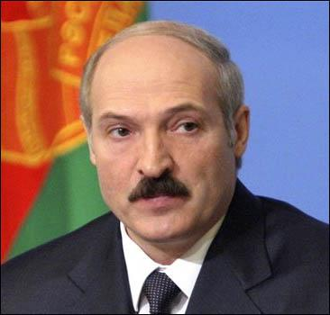
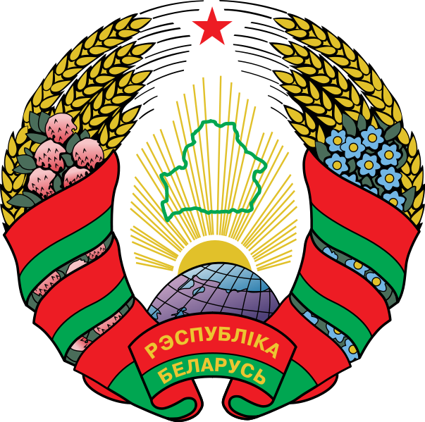

Андрей Борцов (Warrax)
Социализм без ярлыков: Белоруссия
Suum cuique
Вот и подходит к концу серия «Социализм без ярлыков». Перед тем, как написать заключительную статью, считаю нужным написать про страну, которую не принято называть национал-социалистической, но которая ей de facto является в достаточной степени. Это — Республика Беларусь.
Разумеется, такое название не употребляется, не буду использовать его и я; но с тем, что в РБ построен белорусский социализм — мало кто будет спорить, независимо от отношения как к социализму, так и к Белоруссии.
Начну с того же, что в описании Швеции: с отзывов.
Беларусь глазами москвича
Так случилось, что три или четыре года назад мой товарищ Кирилл К. ездил через Белоруссию на мотоцикле, а потом выложил в интернет свои впечатления. Привожу их (в сокращенном варианте, но и так получается много; зато очень наглядно).
Из чего складывается настроение? Из чего складывается внутреннее состояние человека? Из мелочей, в общем-то.
Я не беру форс-мажорные вещи типа аварий, преступлений, терактов...
Как проходит среднестатистическое утро среднестатистического россиянина?
Проснулся утром, выкашлял смог, умылся, поел, оделся. Вышел из квартиры в загаженный подъезд, воняющий мочой, спустился на размалеванном лифте, вышел в засранный собаками и людьми двор, … зашел в заляпанное безвкусной рекламой, набитое воняющими бомжами метро, вышел на нужной станции, прошел мимо стройки, где за ржавыми воротами строится очередной супердом для новых русских, мимо рассыпающейся детской музыкальной школы, купил в ларьке у самодовольной уродливой азербайджанки «Золотую Яву» (принадлежащую Phillip Morris inc, Virginia, USA), встретил товарища, узнал, что школа, в которой мы учились, теперь армянская, перешел через подземный переход, набитый нищими и дагестанскими торгашами, обогнал тоскливо бредущую сгорбленную старуху в драном пальто, зашел на работу, почитал новости, как президент любезничает с американцами, которые постепенно окружают Россию «кольцом враждебности», и что «Норильский Никель» продан англичанам, увидел в окно, как на Гелендвагене подъехал Альви Мамедович — директор, и понял, что работать не хочется. Хочется немножко вредить.
Хотя вроде как ничего лично не коснулось. Так. Мелочи.
Знакомо?
А часом позже проснулся белорус. Вдохнул чистый воздух, поел, умылся, вышел в небогатый, но чистый подъезд, спустился на не новом, но чистом лифте, поздоровался с соседями-белорусами, прошел по чистому двору, сел в комфортабельный новый автобус Минского АвтоЗавода, спустился в чистое метро, скользнул взглядом по проецирующейся специальным проектором на чистую стену станции ненавязчивой рекламе, прошел по чистому подземному переходу, купил у красивой улыбчивой белоруски в ларьке пачку «Золотого Минска» гродненской табачной фабрики, прошел через чистый парк мимо стройки, где реставрируется оперный театр, заглянул через плечо седого представительного ветерана, который в строгом костюме сидел на чистой лавочке и читал газету, выхватил фразу, что Буш грозит Беларуси санкциями, сжал кулаки, стиснул зубы и сел за руль МАЗа.
РАБОТАТЬ!
Завидно?
Я сразу понял, что въехал в Беларусь, когда с обочин исчезли старые покрышки, мятые бочки, ржавые остовы машин, кучи мусора, пластиковые бутылки, разрушенные дома и заброшенные фермы.
Точнее, ферма нарисовалась почти сразу. Вполне целая и ухоженная. Я глубоко вздохнул и приготовился к газовой атаке в виде запаха навоза. А мне в лицо пахнуло… молоком!.. Знаете, такой забытый-забытый запах из детства — сено, чистая, добродушная буренка в уютном коровнике и банка парного молока перед самым лицом.
…Нигде я не встречал такого количества радушных и улыбчивых лиц, никогда я не видел такого количества людей, так искренне желающих помочь и так легко идущих на контакт. …ехал не торопясь, останавливаясь по любому поводу и старался как можно больше разговаривать с людьми. Как-то стою на обочине, подходит ко мне крестьянин.
Ну, типичный такой крестьянин. Галоши на босу ногу. Пыльные брюки. Рубашка неясного цвета и фасона. Загорелое, обветренное лицо. Большие ладони в грубых мозолях. Кто был в деревне — знает такой типаж. Отличий от нашего крестьянина я увидел только два — мобильник на поясе и трезвый. Разговорились. Сначала классика «сколько стоит жрет и прет, куда откуда и т.д.».
— Эх, — говорит, — я тоже всю жизнь мечтал о мотоцикле. Но три штуки баксов — дороговато. Жена, дети, строиться начал вот... Штуку-то баксов я могу за год отложить, чтобы съездить-отдохнуть, а вот три — это, конечно, для меня неподъемно.
Я, признаться, дар речи потерял. Крестьянин в ста километрах от Минска может отложить штуку баксов, каково, а? Потом в Минске мне сказали, что мол «не совсем простой крестьянин тебе попался, не всяк у нас так может», но, ребята, может же!
И видно, что человек РАБОТАЕТ. Не крадет, не перепродает, а
РАБОТАЕТ. По рукам видно, по одежде. Что ж плохого в том, что тот, кто работает
лучше других, и зарабатывает лучше других? Это же классно! Помните формулу
социализма по Марксу? «От каждого — по способностям, каждому — по труду»; вот
она эта формула в Беларуси — работает. Сразу вспомнилось, как на границе другой
белорус на приличном микроавтобусе Фольксваген сказал мне: «Хорошо-то у нас
хорошо, да Бацька мало грошей платит. Мне троих детей учить надо — вот езжу в
Польшу, товар вожу. Езжай до Минска, там тебе минчане подробно расскажут о наших
трудностях.»
Я тогда не нашелся, что ему ответить. А потом сообразил. Поискал его, да не
нашел. Вдруг кто-то из его детей прочтет это, пусть передаст отцу — родной ты
мой брат-славянин, а я НЕ МОГУ позволить себе троих детей. Даже одного не могу
себе позволить в моей стране. Ты даже не понимаешь, какой ты счастливый человек.
В целом статистика такова: я переговорил примерно с 15-ю людьми. Разными. Погранцы, ГАИшники, охранники со стоянки, горничные в гостиницах, бармены, истопники, крестьяне, студенты, водители, в общем, простые люди.
Из 15-ти недовольны трое. Так что — нет, не подделывал Бацька результаты выборов.
Краткая выжимка из разговоров с разными людьми.
— Почему у вас бензин хороший?
— Бацька следит. Бывает, переодевается в колхозника и на заправку с канистрой.
— Почему у вас нет хачей?
— Бацька не пускает. «Работайте у себя дома» говорит. А мы тут сами.
— Почему у вас так чисто?
— Бацька трахает губернаторов и мэров во все дыхательные и пихательные.
— Почему у вас машины уступают дорогу пешеходам?
— Бацька издал указ и трахнул ГАИшное начальство.
— Почему у вас так много красивых девушек?
— Бацька не дает вывозить (смеется) А меня и не тянет как-то. [уезжать, отвечала девушка]
— Почему у вас все кругом ваше? Автобусы, грузовики, троллейбусы и т.д.?
— В тяжелые времена Бацька не дал разворовать заводы, поддержал их дотациями, а теперь они переоборудовались и делают вполне конкурентоспособные вещи.
— Почему ваш крестьянин может отложить штуку баксов?
— А-а-а, он, видать, с усадьбы. Ну… фермер, короче. Бацька издал указ о поддержке фермеров и сельского туризма. В Заречанах был? Очень рекомендую.
— Почему у вас такие достойные старики?
— Бацька заботится.
— Тебе-то тут как вообще?
— Хи! На днях один «гигант мысли» с Украины пытался доказать мне, что я живу в тоталитарном государстве, что мои права и свободы нарушаются... (веселый смех) Придурок из страны Баунти.
— Откуда?
— А… это нашу «оппозицию» так называют. Ну, те 150 идиотов, что на площади после выборов палаточный городок ставили. Их в принципе не трогали, пока они там гадить не начали. Тогда прогнали. Бедненькие. Им по 200 долларов обещали, а заплатили только по 20. Да и то не всем.
Да, Беларусь беднее Австрии. Но Австрия не воевала хрен знает сколько лет. У Австрии нет внешнего врага, ставящего палки в колеса. Население Австрии не было уничтожено на 50% во время войны. Легко быть здоровым и красивым, когда тебе в этом не мешают. А быть здоровым и красивым в окружении врагов — подвиг. А может потому и получается у них так, что Бацька, выходец из крестьян, не занимается словоблудием, не лукавит, не врет народу и не гнет спину перед иностранцами?
А вот отзыв тоже знакомой, которая с мужем ездила в Минск в этом году:
«И по-прежнему отсутствуют: бомжи, цыгане, лица кавказской национальности, гламурные голые барышни в штанах на лобке, миллионы народа в метро, дикие пробки на дорогах, наглые пешеходы, бешеные водители, картон в колбасе, картон в хлебе, картон в молоке, полиэстр во всех шмотках, китайское барахло во всех магазинах, шоколад без какао и прочие ежедневные нормы московской жизни.
Оппозиционно настроенные граждане уверяют, что в связи с кризисом белорусский народ начал голодать. Я желаю переехать в Минск и голодать вместе с белорусским народом. Желаю есть такой хлеб, такое молоко, такое мясо — и что там еще едят белорусские голодающие, а здесь не достанешь ни за какие деньги.»
Причем семья далеко не бедная — просто действительно качество белорусских продуктов куда выше среднестатистического. Сам покупаю исключительно белорусскую тушенку и стараюсь брать белорусскую сметану.
А вот впечатление от автомобилиста:
«Проехав по аццкой тоталитарной Беларуси, стонущей под гнетом кровавого диктатора, порядка 2000 километров, нам не удалось обнаружить ни одного (еще раз: НИ ОДНОГО) стационарного поста ГАИ. Даже на въезде в Минск и на выезде из него. Интересно, они вообще там есть? Стоящие у дороги экипажи ДПС за все время пути встретились 2 (прописью: ДВА) раза. Интересующиеся могут проехать 2000 километров по свободной демократической РФ в произвольном направлении и посчитать количество откормленных продавцов полосатых палочек. Ездят все местные очень приятно, то есть по правилам — в городе 50, на трассе 90, впрочем, нас предупреждали, что правила там лучше не нарушать».
Или вот:
«Там же, в метро, изучил плакат о приеме на работу в милицию — требуется отсутствие компрометирующей информации на родственников соискателя, помимо всего прочего. Это заметно. Белорусский милиционер заметно отличается от российского милиционера подвида “мусор”. За все прибывание в Белоруссии не встретил ни одного милиционера, который мне бы чем-нибудь не понравился. Это подтянутые крепкие мужчины со здоровым и доброжелательным выражением лица.
В Белоруссии чисто, нет засилия рекламы, палаток с хотдогами, курящих на улице людей, мусора под ногами и “чурок”. Спиртное и пиво продают строго с 8 до 23, что хорошо. Продукты подешевле наших (нет кучи жадных посредников, используются наценочные категории), качество повыше».
Не может же всем нравится!
Разумеется, ничто не может нравиться абсолютно всем. Но как-то так получается, что претензии Белоруссии предъявляются несколько специфические… Пожалуй, самой наглядной иллюстрацией можно назвать пост в LiveJournal некоего Martin Torp:
«Ночь с субботы на воскресенье я провел в Минске в гей-клубе на концерте группы “Смысловые галлюцинации”…
Собственно, весь Минск является одной сплошной смысловой галлюцинацией — и не нужны больше никакие концерты. Мне сложно рассказывать там о своих поездках, когда абсолютное большинство населения столицы в лучшем случае отправляются на отпуск в Крым — причем не на поезде, а на автобусе, потому что так на пять долларов дешевле. Мне сложно рассказывать о своих впечатлениях от виденных мной за последний год диктатур в этом городе, где президент не стесняясь на вопрос тележурналиста о выборах в следующем году отвечает: ”Куда вы денетесь — выберете”. Дословно.
Я приезжаю в Минск пару раз в год и вижу, как страна проваливается в колхоз. И когда что-то поменяется, надо будет в первую очередь вытягивать людей из этого колхоза. Вчера в семь утра я пил кофе и смотрел в это время программу белорусского телевидения “Земля людей”. Там рассказывали о кормовой базе — с графиками и цифрами о сборе льна в тоннах и почему скот лучше ест кукурузу, чем ячмень. Потом был сюжет о стародорожских животноводах и новом агрогородке Снов. Глава государства, как председатель колхоза, ездит и делает выволочки тем, кто неровно кладет плинтусы, и лично проверяет, пролазит ли рука в щель между стеной и потолком. И страна идет именно туда, куда он лезет руками.
В ночных клубах три четверти публики выглядят так, что их никогда не пустят ни в один приличный московский клуб (и я говорю не об “Осени”, а, скажем, о “Пропаганде”). В одной из четырех-пяти приличных кофеен на весь двухмиллионный Минск на вопрос, похож ли их творожный торт на чизкейк, официантка ответила с вызовом: “Я не знаю, что такое чизкейк”. О группе Coldplay, например, знает не каждый ди-джей популярных FM-радиостанций (проверено).
Мне кажется, очень точно о теперешнем состоянии этой страны говорит одна вещь. В центре Минска оказалось совсем непросто купить цветы. Привыкнув к цветочным палаткам на каждом втором перекрестке, я долго пытался найти хоть одну в субботу днем в районе площади Победы. Государственный магазин “Цветы” был закрыт “на сандень”. Это город, в котором люди не покупают цветы. И от одного этого становится страшно».
Нет, тут дело не в гей-клубе — впрочем, отмечу, что автор потом жаловался еще и на то, что-де означенный клуб функционирует без вывески. С моей т.з. — как раз демократично: кому надо, найдет, а вот пропагандировать такое место — это однозначно против воли большинства.
Показательны именно претензии: мол, как это — глава государства лично проверяет чью-то работу? Как это — по телевизору показывают передачу про урожай, а не выступление каких-нибудь «Малоосмысленных глюков» в каком-нибудь клубе трансвеститов? Как можно не знать группу, которую всем положено знать? А уж чизкейк — это да. Я, кстати, тоже не в курсе, что это такое — понятно, что какой-то десерт с сыром, и ладно. И группу Coldplay первый раз услышал, как и про «Галлюцинации». А еще, если хотите знать, ел я эту вашу фуа-гра ради интереса — и не понравилось, слишком жирно. Видимо, я тоже колхозник.
Ну и про цветы — давайте с Москвой сравним. Тут, если кто не в курсе, киоски с цветами чуть ли не в каждом квартале. Круглосуточные. С бешеными ценами. При этом, что характерно, купленные цветы не стоят даже сутки — увядают и осыпаются. Ну и? Дарить такое — и себя не уважать, и одариваемую.
Еще несколько типичных претензий.
«Цены, не соответствующие уровню зарплат» — можно подумать, они в РФ у всех соответствуют.
«Монополизация государством всех крупных предприятий (даже коммерческих)» —жуть-то какая! Особенно в сочетании с «непомерные налоги для непроизводителей». Какие сволочи эти белорусы — о производителях заботятся, а спекулировать по-крупному не дают!
«Закрытие белорусских лицеев, белорусская речь (правильная и красивая) на улице — это что-то с родни чуду». Был я в Минске еще во времена СССР — картина была той же самой. Белорусский диалект играл свою естественную роль «народного говора», а в основном использовался русский литературный язык.
Так, собственно, и должно быть — белорусы, малороссы и великороссы составляют единую русскую нацию, и агитировать за насильственное насаждение белорусского языка не более логично, чем, скажем, сибирского говора в РФ. Ситуация с «сучастной укрмовой» в соседней Украине — отдельная грустная история, берущая начало с еще царских времен, когда «украинский язык» создавали искусственно, причем далеко не всегда украинцы.
Национальный вопрос
Как вы уже прочли в отзывах о Белоруссии ранее, в стране проживает абсолютное большинство белорусов, а «трудолюбивые мигранты» не приветствуются. Правильно сказал Лукашенко: «Пусть у себя работают».
Причем, обратите внимание: это не просто желание народа, как в России, но и государственная политика.
А.Бегун (начальник отдела главного управления оперативной деятельности Государственного комитета пограничных войск):
«Анклавы — это криминальная составляющая миграции. Если говорить о западной миграционной политике, то Запад периодически объявляет об амнистии нелегальным мигрантам … Испания уже провела четыре миграционные амнистии. Беларусь пока амнистий нелегальным мигрантам не объявляла, поэтому говорить об их интеграции преждевременно. Он потому и нелегальный мигрант, что находится вне закона, и мера в отношении его только одна — депортация из страны.
Можно говорить о том, что Беларусь — это многонациональное общество, но если проводить анализ переписи населения 1999 года, то иностранцы составляют лишь около 100 тысяч человек. Поймите правильно, белорусское законодательство в части миграции довольно жесткое. Человек не может приехать сюда, заявить: я хочу здесь жить — и на том основании разбить здесь палатку. В законе четко прописаны основания, по которым можно получить разрешение на постоянное место жительства, трудоустроиться. Одного желания иммигранта мало. Есть перечень оснований, по которым иностранцу может быть отказано в получении разрешения на ПМЖ».
В.Гурин (главный специалист Института социально-политических исследований при Администрации Президента):
«Не секрет, что многие мыслители современности предрекли крах западному миру как таковому. “Могильщиками” в этих теориях выступают эти самые инокультурные анклавы. Сепаратизм в мире сейчас очень развит. Косово, Квебек, баски в Испании, курды, ирландцы в Великобритании — все это примеры желания стать территориальными автономиями. Нужно взглянуть на предысторию этой проблемы. Приезжает, например, представитель некоренной национальности в страну. Привозит семью. Потом возникает диаспора, потом — автономия, а затем следует заявление о территориальном отделении и независимости. Это общемировая тенденция, алгоритм возникновения проблемных зон. Когда эти люди, став законными гражданами, имеют метрополию за границей, которая их подкармливает, — это усугубляет ситуацию. А если еще есть могущественные страны, которые захотят этим воспользоваться, то получается очень большая проблема. Я думаю, что Беларусь варится не в “розовом” бульоне, чтобы нам такие проблемы не ставить на уровне государственной политики».
Казалось бы — банальщина, то же самое скажет любой русский. Вот только россиянские чиновники говорят совсем другое. А белорусские — едины с народом:
«Ассимиляция может быть не только прямой, но и обратной. Египтянин берет белоруску в жены, она рожает детей, которые становятся арабами. Белокурая Наташа надевает хиджаб и становится мусульманкой. Надо ли в угоду политкорректности не заботиться о своем населении? … надо отслеживать тенденции, и, если, скажем, мы увидим, что у нас сложилась чья-то большая диаспора, надо принимать какие-то ограничительные меры».
«В прошлом году, едва два иностранных студента продекларировали, что придерживаются исламского фундаментализма, тут же в отношении их было принято решение о депортации, и они улетели к себе домой».
«Мы исходим из того, что лучше иностранца не пустить, чем потом принимать какие-то меры, выявлять и пресекать. Каждый год мы по различным причинам аннулируем тысячу разрешений на постоянное место жительства. Иными словами, можно говорить, что мы контролируем даже тех, кто получил разрешение на ПМЖ. И вот что еще хочу сказать: да, диаспоры действительно, может, не так очевидно и явно, как в России, но пытаются консолидироваться. Россия только по причине давления диаспор в течение 5 лет не могла принять федеральный закон о правовом положении иностранных граждан. Там лоббирование интересов диаспор возведено в квадрат. Процессы иммиграции наш сосед объективно перестал контролировать, время упущено».
И это — не просто разговоры. В 2006 году был принят закон против фиктивных браков иностранцев с целью разрешения вида на жительство, предусматривающий контроль за интернациональными семьями. В случае, если семья не проживает вместе и не ведет общее хозяйство, брак будет признан недействительным, а иностранцы высланы из страны. И если кто-то скажет, что это не самый национал-социалистический закон, то что такое тогда — национал-социализм? Президент Александр Лукашенко стоит на страже нации. Именно за этого его так дружно ненавидят либералы по всему миру.
Беларусь — это последняя неоккупированная территория России!
Социализм в Белоруссии
В отличие от России, в Белоруссии Лукашенко не позволил развалить производство, приватизировать спекулянтам народное достояние и так далее.
Результат — республика ориентирована на производство своей продукции, а не на закупки импортной. Про продукты уже говорилось; добавлю, что уже давно покупаю ботинки исключительно белорусского производства: натуральная качественная кожа, нормальный дизайн, изумительная носкость.
Кроме того, из общеизвестного: газовые плиты «Гефест», холодильники «Атлант», телевизоры и т.д.
Ну а про белорусские МАЗы и БелАЗы известно всем. Сравните отношение с тем, что творится с автозаводами в РФ. При этом Лукашенко отнюдь не боится регулировать рынок в соответствии с национальными интересами — так, в июне сроком на 9 месяцев были введены временные заградительные пошлины на ввоз грузовых автомобилей с двигателем экологического стандарта «Евро-3».
В современной Белоруссии нет ситуации, которая сложилась в России, когда народ своей кровью платит за «лучшую жизнь» для маленькой кучки своих сограждан (впрочем, у многих гражданство двойное, включая депутатов Государственной Думы).
Ни один из осколков СССР не достиг даже того уровня благосостояния народа, который был до начала «перемен к лучшему».
Белорусы не настолько наивны, чтобы поддастся на либеральную пропаганду теперь, когда результаты видны наглядно на примере соседей. Надо быть последними болванами, чтобы променять спокойную и относительно сытую жизнь на обещания «гражданского общества» и «свободы слова». Особенно с учетом того, что «свобода слова» и т.п. — лишь замануха, которая не реализовывается на практике.
Попробуйте выступить против так называемого Голодомора на Украине или усомнитесь в холокосте в Европе (даже признавая при этом геноцид евреев), и свобода слова сразу же закончится. Или с другого ракурса: либералы любят утверждать, что-де в тоталитарном СССР нельзя было критиковать правительство. На самом деле — можно было, но конструктивно, а не в виде «черного пиара», но суть в другом: как думаете, насколько свободно сейчас в РФ критиковать не Путина с Медведевым (толку-то), а непосредственное начальство? А вот в СССР — можно было, и вполне безопасно. И даже эффект это давало, если критика была обоснованной.
Проще говоря, большинство белорусов вполне устраивает построенный в РБ белорусский социализм, а Лукашенко — демократически выбранный лидер.
Еще показательное. В этом году было объявлено, что Беларусь в расчетах со всеми основными торговыми партнерами планирует перейти на использование резервных региональных валют.
«Мы сделали вывод, что должны максимально стимулировать развитие двусторонних и многосторонних отношений за счет расчетов в национальных валютах, за счет стимулирования применения резервных региональных валют других стран, чтобы тем самым минимизировать потери от гегемонии одной валюты», — сказал председатель правления Нацбанка Петр Прокопович, встречаясь сегодня с президентом страны.
По его мнению, одной из причин, по которой мировая экономика оказалась в кризисе, явилось доминирование одной резервной валюты — доллара США.
Сравните с действиями Администрации РФ, которая всячески поддерживала доллар — ну и где теперь Стабилизационный Фонд? Что именно он стабилизировал, пока не закончился?
Показательны здесь советы Андерса Ослунда, входящего в мировую элиту специалистов по переходным экономикам. В 2001 году Ослунд согласился дать эксклюзивное интервью для «Белорусской газеты». Не буду комментировать, просто процитирую самые, так сказать, интересные рекомендации:
«…проведение глубокой либерализации. Экономическая среда не свободна. Существует множество президентских указов, которые мешают работать. Их нужно отменить.
…реформа государства. Надо все организовать по-новому. …проведение приватизации. Не буду говорить о том, как ее надо проводить, главное — проводить ее быстро.
Очень важно провести либерализацию цен… Надо как можно быстрее отменить ценовое регулирование.»
«Существует мнение, что в случае широкомасштабных реформ все в Беларуси скупят россияне. Есть ли основания бояться такого развития событий?
— Это вполне вероятно. … Важно, чтобы приватизация была быстрой и прозрачной. Это значит, что каждый должен иметь право в ней участвовать, не только россияне.»
Видите? Главное — побыстрее, чтобы не успели понять, что происходит, пока не будет поздно, и — в приватизации участвовать должны не только белорусы и даже не только «россияне», но и «каждые». Думаю, всем понятно, кто эти «каждые»?
Оппозиция
Что мне нравится в действительно народных режимах — это когда используются правильные термины, а не «замещающие» Так, Президент Беларуси открыто называет оппозицию «пятой колонной» и «врагом народа». Очень правильные определения, т.н. «либеральная оппозиция» и всеразличные «правозащитник» в РФ представляют собой ровно то же самое.
«У меня очень много информации [о действиях оппозиции], ее еще надо обобщить. Но если бы мы все опубликовали, как работает оппозиция в Брюсселе, Страсбурге, других европейских столицах и в Америке, то вы бы ужаснулись», — заявил в марте этого года А.Лукашенко. По его словам, «как только мы попытались договариваться с европейцами, и процесс этот пошел в нужном направлении, то это вызвало у них [оппозиции] истерию».
Глава белорусского государства сообщил, что недавно ознакомился с предложениями оппозиции по преодолению кризисных явлений в белорусской экономике. «Читаю и думаю: где эти люди живут? Предлагают заводы приватизировать, порезать, землю раздать…». Говоря о действиях оппозиции, президент также добавил, что «им кто-то подбрасывает идею, и они начинают “плявузгаць”. Вот эта позиция нашей вшивой оппозиции. Никакая она не оппозиция. Это пятая колонна, враги белорусского народа. Я это ответственно заявляю», — подчеркнул глава государства. — «Они готовы продаться любому, чтобы только свернуть голову Лукашенко, вскочить в кресло самим и разбомбить страну. Этого не получится, пока я жив. Сегодня дестабилизировать обстановку в Беларуси никому не удастся».
Показательно, что в этом году белорусская оппозиция начала жаловаться на финансовые затруднения. Некоторые лидеры объясняют это сокращением поддержки из-за рубежа, другие говорят о снижении объемов спонсорской помощи в связи с экономическим кризисом.
Первым о денежных проблемах оппозиции публично заявил заместитель главы партии «Белорусский народный фронт» Виктор Ивашкевич, который пожаловался, что из-за сокращения финансовой поддержки из-за границы у партии возникли сложности с оплатой аренды офиса. Также он сказал, что имеется недостаточно средств и на изготовление агитационных материалов накануне акций протеста и активистам оппозиции отныне предлагается приходить на демонстрации с собственными флагами и плакатами.
«Зарубежные фонды, которые занимаются поддержкой демократии, не помогают белорусским демократическим силам. Дело в том, что мы критикуем тех европейских политиков, которые ведут беспринципные переговоры с режимом, им это не нравится, и они воздействуют на фонды», — рассказал «Времени новостей» Виктор Ивашкевич.
Дело в том, что значительная часть белорусских оппозиционеров не поддерживают переговоры между Минском и Западом. По их мнению, Евросоюз слишком спешит с развитием диалога, не дожидаясь демократических реформ в Белоруссии. Переводя с политического на русский — очень хотелось бы состричь купоны на посредничестве, а — облом-с.
Но самое главное в том, что белорусское законодательство запрещает иностранное финансирование политической деятельности. Нам бы такой закон!
Также нельзя не порадоваться за белорусов в вопросе «цветных революций».
Кто ими руководит? Не, я не про заказчиков спектакля — тут все ясно и понятно. Кукловоды — кто? Вспомните, в чьих интересах проходили разноцветные перевороты как в Европе (Чехословакия, Венгрия, Прибалтика), так и на Украине, в Грузии и т.д.
Закономерность видна четко — в результате выигрывала свежеобразованная пока еще национальная прослойка капиталистов-спекулянтов (а не производственников — в конце концов, Генри Форд был отнюдь не пролетарием). В основном — бывшая номенклатура (слегка разбавленная «цеховиками»), которая ловко переключала административный ресурс на личное обогащение.
Под вывеской маркой демократии всегда скрывалась цель экономическая, а не политическая. Конечно, в «переворотах» принимала участие и интеллигенция (куда же без нее), и просто любители побузить, не отягощенные мозгами. Но они — всего лишь куклы, не имеющие никакого отношения к административному или хозяйственному ресурсу.
Белорусский социализм попросту не дает возможности образоваться прослойке, которая может организовать и поддержать «оранжизм» внутри Белоруссии. А на жаловании будет работать только интеллигенция и отдельные фанатики, саморазоблачаясь до каких-либо действий.
Процитирую слегка пафосные, но верные слова белорусской газеты:
«В Беларуси будут всегда пользоваться спросом политические силы, которые ориентированы не на раскачивание ситуации, а на ее стабилизацию. Люди интуитивно чувствуют, что именно таков курс А.Лукашенко, который зарекомендовал себя решительным противником любых “оранжевых” проектов. Не разрешив радикальной приватизации, стабилизировав экономическую ситуацию, сохранив рабочие места, сделав упор на поддержание социальных стандартов, руководитель государства серьезно укрепил свой авторитет в глазах избирателей».
15 лет работы Кормчим
Говоря о Белоруссии, невозможно обойти вниманием лично Александра Григорьевича Лукашенко.
Не буду пересказывать биографию — каждый легко прочтет ее в интернете. Давайте лучше вспомним, как все было…
Пятнадцать лет назад, 20 июля 1994 года прошла инаугурация впервые избранного президента Республики Беларусь.
Почему белорусы выбрали не известного номенклатурщика или распиаренного демократа, а человека без весомой должности в прошлом и без партии за спиной?
Было еще пять кандидатов.
Бывший председатель Верховного совета РБ Станислав Шушкевич (лидер партии «Белорусский народный фронт») и Зенон Позняк (сейчас он укрывается в США) — сторонники ориентации на Запад. Честнее говоря — сдачи Белоруссии Западу.
А также — премьер-министр Вячеслав Кебич, который тогда de facto руководил Белоруссией; Василий Новиков, который открыто называл себя приверженцем социалистической идеи и аграрий Александр Дубко («Голосуйте за Дубко, будет хлеб и молоко!»). Эти трое были за сближение с Россией.
Депутат Верховного совета Александр Лукашенко целенаправленно демонстрировал отсутствие связей с чиновниками, номенклатурой и партийными бонзами — и оказался прав.
С одной стороны, народ, увидев увеличение ассортимента магазинов изобилие после опостылевшего «совка» (увы, СССР не был идеален), не хотел возвращаться обратно, и коммунистические лозунги были не популярны. Особенно с учетом того, что во времена «застоя» они были уже давно надоевшей формальностью.
С другой стороны — столь сладостные славословия в сторону демократии, прав человека и т.п. не вызывали отклика у прагматичных белорусов. «Движение в Европу» также вызывает сладостные грезы исключительно у интеллигентов, а белорус привык не мечтать, а трудиться — причем на своей земле. И никому ее не отдавать.
Лукашенко же действительно был «народным кандидатом».
«Мы стоим над пропастью системного кризиса государства. Даже после Великой Отечественной войны такого не было. Общий спад производства составил 40%. Сельское хозяйство отброшено на двадцать лет назад. Инфляция в 1993 году составила 1700% и возрастает на 50% ежемесячно. Остановлено производство на многих предприятиях, растет безработица… По живому разрезаны традиционные связи братских народов… Президент инициирует и будет развивать процессы объединения государств, ранее входивших в состав СССР, и будет выступать против любых действий, разрушающих это единство», — обещал Лукашенко.
И далее он был честен:
«Я не обещаю вам молочных рек и кисельных берегов. Не хочу лгать. Нам всем придется расплачиваться за то, что мы так долго терпели несостоятельную политику давно обанкротившегося правительства. Предстоит большая и трудная работа, которую никто, кроме нас самих, не сделает.»
И народ отказался от поворота к капитализму, одобрив программу Лукашенко, который твердо стоял на позиции против ухода государства из сферы регулирования экономических и социальных отношений.
В первом туре Кебич набрал 17,32% голосов. Третьим был «националист» Позняк — 12,82%. А Лукашенко до победы не хватило всего пару шагов — его результат в первом туре составил 44,82%.
Второй тут был совсем уж нагляден: 80,1% к 14,1%. Результат ошеломил белорусского премьера настолько, что он сразу подал в отставку.
Бывший премьер в книге «Искушение властью» сокрушался, что зря не задействовал все возможности на полную катушку: «Мог ли я не проиграть? Естественно, мог. Если бы полностью задействовал, причем на совершенно законных основаниях, административный ресурс — как это делается сейчас в Белоруссии, в России, в других странах. Не сделал я этого по глупости.»
Пятнадцать лет президентства — это слишком много, — верещат либералы. Надо, мол, давать и другим порулить.
Нет, знаете ли. Руководить должен тот, кто может привести свой народ и свою страну к процветанию — причем не только в обывательском понимании этого термина.
Так что не знаю, как вы, а я лично желаю Александру Григорьевичу пережить на своем посту как минимум столько же президентов других стран, сколько это смог Фидель Кастро.
Армия
Разговаривая о народном государстве, нельзя обойти стороной вопрос обороны.
В самом деле — какой смысл в завоеваниях государства, если его легко завоевать?
«Сегодня мы идем шаг в шаг в соответствии с программой строительства Вооруженных сил. К 2013-2015 годам наша армия будет полностью переоснащена и будет соответствовать самым высоким передовым стандартам», — заявил А.Лукашенко журналистам, подводя итоги комплексного оперативного учения «Осень-2008».
«За последние 13 или 15 лет армия преодолела период упадка, встала с колен, стала во весь рост и вышла сегодня на уровень почти 100-процентной боевой готовности.»
«С Беларусью сегодня иметь дело через мушку прицела очень опасно, смертельно опасно», — заявил глава государства. По его словам, проведенное учение является «фактором большого сдерживания». «Такого огня, наверное, противник Беларуси не хотел бы испытать.».
«Сегодня мы следуем за временем, мы видим, как изменяется обстановка, мы прогнозируем, что будет дальше. И в соответствии с этим проводим учение так, как не дай Бог, пришлось бы воевать», — заявил Президент.
Когда Советский Союз развалился, Белоруссии отошел бывший приграничный округ — первый эшелон усиления передовых группировок в Европе.
Белорусы же не просто сохранили полученное, но модернизировали и преобразовали в действительно боеспособную армию.
По оценке Королевского объединенного института оборонных исследований (RUSI, Великобритания), сделанной еще в 2002 году, Белоруссия по своему военному потенциалу занимает 41-е место (из 164-х) в мире. По тому же показателю она на третьем месте среди стран СНГ после России (2-е место в общемировом списке, на 1-м - США) и Украины (21-е). Впрочем, что-то я сомневаюсь соответствии места реальному положению дел на Украине… но не будем отвлекаться.
Далеко позади Белоруссия оставила все страны бывшего Варшавского договора, кроме Польши (30-е место), а также некоторые европейские государства.
Белорусские лейтенанты по окончании академии или вуза из армии не разбегаются (как в России), а видят перспективы для своего дальнейшего служебного роста.
При этом генеральские погоны получить весьма проблематично: даже находясь на генеральской должности, нужно не один год доказывать, что ты достоин присвоения соответствующего звания. В отличие от России, ношение военной формы в РБ — престижно. При этом средний возраст офицера вооруженных сил Белоруссии составляет 33,5 года. Армия Беларуси — молодая и «зубастая».
Сейчас же в сотрудничестве с Россией Белоруссия собирается производить ракетные комплексы «Искандер», «Тор» и «Тополь».
Очень показательная история была в эфире «Радио Свободы» в 2006 году. У некоего активиста БНФ (оппозиционная партия местечкового антирусского национализма) по возрасту наступило время призыва. Все в курсе, как стремятся загрести призывников в РФ? Сравните:
«Почти каждую неделю навещал военкомат. Говорил с представителями различных военных частей. Со мной беседовали десантники из Витебска, спецназовцы из Марьиной Горки, пограничники, танкисты… Все они отказывались меня брать из-за моей партийности. При мне пограничник звонил товарищу и спрашивал: что со мной делать? Ответ я услышал на отдалении. Тот кричал: “Нет! Ни в коем случае!” Наконец мне и еще одному парню, который стоит на учете в психдиспансере, сказали, что мы родине не нужны, и что мы не достойны служить в белорусских войсках».
Именно так и есть — тот, кто идет против народной власти, не достоин служить в армии и должен состоять на учете в психдиспансере.
России бы такую власть и такую армию…
И нельзя забывать, что Белоруссия — это передовой заслон для России в случае очередного Drung nach Osten.
Почему мне нравится Лукашенко?
Не буду оригинальничать — процитирую подборку от Имперскiй Репортеръ.
Потому, что в Белоруссии нет гайдаров, чубайсов, ходорковских и абрамовичей.
Потому, что на белорусском телевидении нет ксюшисобчак и «Самолета президента».
Потому, что единственный гей-парад, который может состояться в Минске — это пара сотня майдаунов после выборов на Октябрьской площади.
Потому, что разнообразные Подрабинеки при Батьке сидят там, где им и положено — у параши, а не в правозащитных фондах.
Потому, что Белоруссия не стремится в ВТО.
Потому, что Батька не собирается завозить десять миллионов Трудолюбивых Мигрантов™.
Потому, что Батька единственный, кто принял несколько тысяч русских людей, бежавших из азиатских республик.
Потому, что в белорусских кафе официантки не знают, что такое «чиз-кейк» (про это я писал выше; история широко разошлась по интернету, да).
Потому, что Батьке плевать, что происходит с его счетами в Швейцарии и на Кайманах, за отсутствием таковых счетов.
Потому, что Батьке накласть на мнение Прогрессивной Мировой Общественности и Самой Демократической Страны Мира.
Потому, что Батька развивает свой технопотенциал, а не закупает за нефть западные технологии. В демократической россиянии (не путать с Россией) Эффективным Собственникам™ это не интересно, им выгоднее менять ресурсы на сникерсы, а вот в ужасной тоталитарной Белоруссии применяются разработки, оставляющие Запад позади.
Потому, что белорусские карьерные самосвалы без всякого рыночного либерализма вытесняют с рынка «Катерпиллеры».
Потому, что при отсутствии ресурсов Белоруссия демонстрирует рекордный рост ВВП. И не надо про реэкспорт газа. Грузию и Украину мы кормили энергоносителями очень долго, и ничего похожего. И никаких кредитов Батька тоже не видел. Однако же...
Потому, что Белоруссия единственная не прогнулась под Новый Мировой Порядок, а, как и 60 лет назад, успешно партизанит.
Потому, что я могу быть уверен, что при Батьке натовских радаров на территории Белоруссии не будет.
Потому, что ни одна западная [cenzored] не скомандует Батьке, какие ракеты и подлодки ему пилить, а какие оставить догнивать.
Потому, что любая гнида, любящая повякать про «неизбывную вину русских перед всем человечеством», быстро оказывается с крепко заткнутым хлебалом.
Потому, что в Минске чистые улицы, без оберток от тампаксов и табунов нищих, бомжей и цыган.
Потому, что в Белоруссии ставят памятники Сталину (я сначала усомнился, но памятник Сталину действительно существует: бюст расположен в городской Аллее памятников города Свислочь Гродненской области Беларуси).
Этого достаточно? Мне — да.
Примечание
Для любителей демагогии и тому подобных деятелей.
Нередко приходится слышать заявы вида «раз вы (в общем виде) так нахваливаете Белоруссию, то почему вы туда не переезжаете?».
Все просто: надо думать не о переезде в Минск, а о том, как сделать, чтобы вся Русь стала такой же Белой, чтобы русская земля стала Россией, а не Россиянией.
Кстати говоря, очень характерное мышление: не сражаться с трудностями, а убегать от них. Не по-русски это, знает ли…
***
Невозможно говорить о Беларуси и не упоминать Александра Лукашенко.
Он активно не нравится Западу, так как не ориентируется на него, именно он остановил либеральные реформы в Белоруссии. При этом он же – единственный среди лидеров бывших советских республик, который четко придерживается курса на сближение Россией, причем именно как равноправный партнер.
В преддверии выборов в РФ так и хочется указать — берите пример с Лукашенко: именно таким должен быть народный лидер.
Лукашенко пришел к власти был избран президентом в 1994 году, экономика Белоруссии начала быстрый рост уже с 1996 года. Внутри Беларуси все эти годы отсутствует какая-либо стоящая упоминания оппозиция, и никто не имеет реальных рычагов воздействия на белорусскую ситуацию.
Юрий Шевцов в своей книге «Объединенная нация. Феномен Беларуси» (я ей буду широко пользоваться в этом тесте, местами без явных цитат) пишет:
«Перед нами феномен: целая постсоветская европейская страна много лет проводит политику, которая никак не вписывается в постсоветские стандарты. Беларусь отказалась от шоковой терапии и массовой приватизации, сохранила высококонцентрированное экспортно-ориентированное промышленное производство, инициировала и заключила союз с Россией, остановила развитие собственного национализма, выдержала жесткую идеологическую и политическую конфронтацию с Западом. Эта страна отстроила все структуры независимого государства и отказалась растворяться в России. Ни одна бывшая советская республика и ни одно бывшее европейское “социалистическое” государство не пошли таким путем.
…лидер не может не быть производным от социально-экономической структуры своего общества, не может не быть частью культуры своего народа, частью местной политической традиции. Тем более лидер, который более десяти лет возглавляет государство и обеспечивает его успешное развитие при резком противодействии со стороны очень влиятельных сил.»
Что ж, давайте изучим особенности Белоруссии. Ю. Шевцов в своей книге пытается провести главное мыслью влияние Чернобыльской аварии, но я с этим не согласен. Дело именно в менталитете белорусского этноса, субэтноса русского народа, который формировался задолго до трагедии в Чернобыле.
Тутэйшыя
Белорусы, если сравнить с великороссами, занимают относительно небольшую территорию. Эта территория была освоена белорусами достаточно давно. Важно: белорусы в течение тысячи лет не знали массовых освоений обширных пространств, характерных для великороссов. Белорусы, которые покидали свой регион (его географические границы – между Полесьем и Южной Прибалтикой), ассимилировались в местах своего нового расселения и не поддерживали тесной связи с местами, откуда пришли. Эти люди терялись для белорусской культуры и идентичности. Явление понятно: белорусы — это тоже русские, и по сути такое переселение эквивалентно смены места жительства с одного города на другой. Однако белорусский субэтнос обладает своими особенностями.
Во-первых, как уже сказано, белорусы обитали на своей территории достаточно компактно, не занимаясь экспансией.
Во-вторых, миграционные потоки «снаружи» обычно не были связаны с массовым переселением иноэтничного населения в сельскую местность. Мигранты оседали преимущественно в городах. На территории Белоруссии эта общая для европейских стран закономерность дополнялась почти полным отсутствием сельских территорий, которые были бы полностью колонизированы иноэтническими мигрантами. «Беларусь не знала германизации Судет, мадьяризации ряда карпатских регионов или польской колонизации некоторых территорий правобережной Украины…» — пишет Шевцов.
Исторически на территории между Полесьем и Южной Прибалтикой нередко случались войны, в ходе которых погибало в основном городское население. При этом . потери сельского населения в основном возмещались местными жителями, а вот послевоенное восстановление городов осуществлялось за счет активного привлечения не-белорусов. Нередко при этом культурная самоидентификация политической верхушки менялась, вызывая соответствующие культурные изменения.
Таким образом, белорусы — это в значительной мере потомки той части преимущественно сельского населения, которая осталась жива в ходе часто повторяющихся войн. Ю. Шевцов:
«На протяжении жизни каждых трех четырех поколений повторялись разрушительная война и послевоенное восстановление. Политический класс в регионе Беларуси в ходе войн, оставаясь местным по происхождению, несколько раз радикально менялся по культуре и идентичности. Политическая и культурная традиция в период между войнами никогда не успевала приобрести окончательную устойчивость и несколько раз резко прерывалась. Формирование белорусов как современной нации развернулось в XIX столетии на базе крестьянской культуры и традиции.»
«Автохтонность белорусов – принципиально важная черта белорусской идентичности, обусловленная историей региона. Распространенное в Беларуси самоопределение “тутэйшыя” (“здешние”) является одной из базовых черт этнической самоидентификации. Часто эта “тутэйшесть”, автохтонность важнее для населения и отдельных микросоциумов, индивидуумов, чем любой политический, культурный или даже языковой компонент».
То, что на территории Белоруссии практически отсутствует некомплиментарный иноэтнический элемент, обуславливает «тутэйшность». Для белорусов характерно стремление к здоровому консерватизму, желание жить именно своей жизнью, не поддаваться на чужую пропаганду.
Этим и объясняется внутренняя устойчивость белорусской политической системы. После прихода к власти А. Лукашенко здесь не было ни крупных социальных выступлений, ни межнациональных обострений, ни межконфессиональных или клановых столкновений, ни обострения отношений с соседями.
Всеобщая перепись 1999 года впервые проводилась по принципу самоидентификации каждого. Белорусами определили себя 82% населения, белорусский язык в качестве родного назвали 73,7 % (то есть 86,5 % белорусов), белорусский язык в качестве языка, на котором разговаривают дома, — 36,7 % населения (41,3 % белорусов).
Эти данные соотносимы с данными предыдущей всеобщей переписи 1989 года, где запись об этнической принадлежности опрашиваемых заносилась на основании паспортных данных человека, однако пункт о родном языке заполнялся на основании заявления опрашиваемого. Белорусский язык тогда назвали родным 65,6 % населения.
Массовое использование в быту языков иных народов — прежде всего русского и польского — является нормой для белорусов.
Унийность как основа политической культуры
В Белоруссии, в отличие от территории расселения великороссов, иная культура политического обустройства. В этом регионе тяжело создать сильную и устойчивую центральную власть. Практически отсутствует долгосрочный экономический источник такой силы: ни шведских рудников XVI–XVII веков, ни богатств Сибири XVII–XVIII веков, ни осваиваемой причерноморской степи XIX века. В то же время регион между Полесьем и Балтийским морем практически невозможно оккупировать и устойчиво господствовать над ним, опираясь лишь на собственную военную силу. Наконец, этот регион сам по себе не очень привлекателен по сравнению с Балтийским морем и его торговым значением, степью или Сибирью.
Белоруссия — это зона обширного транзита, который может быть успешным, только если будет политически обеспечен согласием на него местного населения.
Ю. Шевцов:
«Каким бы образом ни возникла власть, которая претендовала на этот регион, ей приходилось устанавливать на данной территории отношения сотрудничества с множеством местных элит, слабо связанных общими интересами между собой. Естественное стабильное состояние политической системы для этого пространства — рыхлая конфедерация, которая время от времени сплачивалась для решения региональных задач. В некотором смысле все опустошительные войны в этом регионе — это очередная неудачная попытка военным путем обеспечить контроль новой внешней силы над регионом ради достижения более важной и масштабной геополитической задачи. Такие задачи пытались решать Карл XII, Наполеон, Вильгельм II, Гитлер… Однако вооруженным путем контролировать этот регион долго нельзя. Местная политическая традиция, которая в состоянии обеспечивать выживание на этой территории и прогресс, — это культура унии, перманентной консолидации региона в контексте более широких объединительных процессов. Если российская политическая традиция — это традиция захвата и покорения, то традиция белорусская и, шире, балто-славянская, региональная, — это стремление объединиться на определенных условиях с сохранением каждым субрегионом своих прав, обязанностей и отличий. Политическая культура белорусов — это прежде всего культура переговоров об очередной унии или уточнении условий уже заключенной унии.
Такие исторические события и персонажи, как коронации князей Миндовга и Даниила, Кревская и Люблинская унии, вся история правления Ягеллонов, Великое посольство Льва Сапеги в Москве, Станислав Понятовский, даже Александр Лукашенко с его курсом на интеграцию с Россией без потери самостоятельности Беларуси — абсолютно логичны в политической культуре и традиции белорусов…»
В рамках российской политической и культурной традиции понятны заявления даже нынешней, слабой эРэФии о намерении присоединить Белоруссию в свой состав. Пусть не говорится о конкретике, но, если хоть как-то затрагивается тема, то стремление именно такое.
Для Белоруссии же естественен союз с РФ без официального вхождения в состав последней. С точки зрения белорусской политической традиции совершенно нормально стремиться к объединению, но не к растворению в единой стране. Так были организованы Великое княжество, Речь Посполитая и — некоторым образом — Советский Союз с его союзными республиками.
Любая «демократизация» или смена режима в Беларуси мгновенно поднимет множество исторически обусловленных вопросов разного масштаба — от трактовки многих событий местной истории до взаимоотношений между разными культурными группами населения.
Великороссы исторически оказались способны в силу ряда причин стать сердцевиной общества и государства, ставившего перед собою глобальные задачи.
Белорусы же умеют мыслить себя в контексте большого целого, при этом культура и традиция белорусов позволяет им находить свое место внутри большого политического и культурного организма, не растворяясь в нем.
Поэтому два субэтноса русского народа являются естественными союзниками, а необходимости в «растворении» не существует.
«Русские обладают относительно непрерывной исторической и культурной традицией, хранителями которой выступают церковь, государство, русский язык, обширное пространство расселения русского народа и его численность. Утрата одного или некоторых из этих факторов, любые трансформации внутри институтов государства и церкви, любые реформы языка не влекут за собою прерывания традиции в целом, ибо одновременно все эти факторы уничтожены или трансформированы быть не могут. В некотором смысле русский народ живет в ощущении времени как вечности, в которой он будет «всегда».
У белорусов не один раз могло быть уничтожено все или почти все: язык, государственность, церковь, которой они были привержены в данный момент истории, этническая самоидентификация. Иногда, как, например, во время нацистской оккупации, речь шла о возможности физического уничтожения или прямого порабощения белорусов. Белорусская идентичность неизбежно вобрала в себя осознание возможности гибели и дала на него рациональный ответ — программу выживания и победы во имя выживания.» — Ю. Шевцов
Обычные, самые невинные философские размышления в русском духе ставят человека в Беларуси перед угрозой полной неадекватности.
Белорусская идентичность, в отличие от русской, является в основе своей рациональной формой приспособления к окружающей действительности. Беларусь не манифестируется, а постигается. Белорусская националистическая традиция, которая является полным и вполне зрелым аналогом национализмов соседних народов, более ста лет неудачно пытается выстроить «белорусскость» через манифестацию. Неудачи преследуют всех идеологов, которые пытаются увидеть белорусскую идентичность, проявляющую себя через некую внешнюю форму культуры — язык, исторические мифы, конфессиональный патриотизм.
Манифестационность не свойственна белорусской традиции и идентичности. «Белорусскость» выражает себя скорее через действие, через движение к понятной практической сложной цели.
Белоруссия при СССР
Города Белоруссии были заселены крестьянами и населением из других регионов бывшего СССР в ходе послевоенной урбанизации.
Поскольку именно Белоруссия приняла на себя первый удар в Великой Отечественнйо войне, довоенное городское население в ходе Второй мировой войны в массе своей погибло.
В ходе ВОВ на территории между Балтийским и Черным морями, Москвой и Германией, были практически полностью разрушены города, а городское население почти полностью погибло. В Беларуси разрушение городов было наиболее очевидно. В Минске, насчитывавшем перед войною около 300 тысяч человек, после освобождения от нацистов осталось около 100 тысяч. В Витебске, втором по величине городе БССР, перед войной насчитывалось около 100 тысяч жителей, а в момент освобождения от нацистов — менее двадцати тысяч. В целом потери в городском населении БССР составили свыше 70%. Столь же тотальными были потери в промышленности, жилищном фонде и городской инфраструктуре.
После Победы у власти оказались те, кто защищал страну с оружием в руках; условно можно сказать, что это — бывшие советские партизаны. При этом советская идеологическая интерпретация белорусской идентичности выполнила в регионе интеграционную идеологическую и культурную функцию.
Таким образом, современное белорусское славянофильство (сравните с остальными бывшими республиками) и советский консерватизм фиксируют ценности сформировавшегося в ХХ столетии политического класса Белоруссии, тем самым обеспечивая успех белорусской внешней политики на самом важном для РБ ныне направлении — на постсоветском пространстве.
Война в Белоруссии была очень ожесточенной, и в ходе разгрома нацизма сторонники несоветского варианта белорусской идентичности были в основном убиты или покинули страну.
В ходе Великой Отечественной войны произошла резкая политическая трансформация: погиб почти весь правящий класс, сформировавшийся в довоенной БССР и межвоенной Польше. Было уничтожено почти все городское (в значительной части еврейское) население. БССР покинули многие поляки. Новый правящий класс сформировался в основном из числа бывших советских партизан и подпольщиков.
«Именно “партизаны” добивались и добились инвестиций из союзного центра на развитие в БССР крупных заводов, восстановление и развитие городов, мелиорацию и сверхиндустриализацию. Этот правящий класс по своему позиционировал себя в Москве. Его внутренняя солидарность и моральная чистота были для бывшего СССР, вероятно, беспрецедентны. … Ненависть к националистам коллаборантам у ”партизан” была в общем тотальной.
…свободная от исторических сомнений и споров советская белорусская культура оказалась прекрасно приспособленной к технократическим культурным экспериментам и к созданию сильных институтов государственной власти в БССР. А также — к восприятию прежде всего технических достижений, к быстрой урбанизации и развитию в БССР крупного промышленного производства.» — Ю. Шевцов
Поскольку инфраструктура Белоруссии создавалась заново, она естественным образом становилась передовой для своего времени, и гиганты промышленности, требующиеся стране-победителю, строились в том числе и здесь.
«Сверхиндустриализация» была следствием не только заинтересованности Москвы в развитии именно в БССР мощного промышленного очага, но и стремления самих белорусов к именно такой форме социального творчества и экономической организации.
Это хорошо видно во всей послевоенной истории БССР. Очень часто инициатива размещения в Беларуси крупных предприятий, проведения мелиорации, быстрой урбанизации выдвигалась самой БССР. Из самой Беларуси также часто приходили и инициативы по сокращению сферы применения белорусского языка и белорусоязычного образования, подавлению форм несоветской идентичности.
В середине 90-х годов приход к власти А. Лукашенко сопровождался парадоксальными для всех постсоветских стран и восточноевропейских государств референдумами об отказе от «исторической» несоветской (точнее, антисоветской, т.к. использовалась коллаборционистами) символики, о признании за русским языком равного статуса с белорусским.
На референдуме была принята символика, которая подчеркивает преемственность Республики Беларусь к БССР. Белоруссия перенесла День независимости с Дня провозглашения независимости Беларуси от СССР в 1991 году на День освобождения Минска от нацистской оккупации Красной армией 3 июля (1944 года), герб и флаг РБ в целом повторяют герб и флаг БССР.
В то же время белорусы все годы после распада СССР демонстрируют поддержку всех действий своей власти по отстаиванию институтов независимого и сильного государства. В связи с этим, казалось бы, парадоксальным поведением белорусов закономерно всплывает вопрос об особенностях белорусской идентичности и, главным образом, чем белорусы отличаются от русских, разные это народы или один народ, разделенный государственной границей.
Показательно, что белорусы, как и великороссы, этот вопрос (за исключением отдельных политиканов) не ставят в принципе — он даже не обсуждается. Обоим сторонам понятно, что белорусы и великороссы — часть единой нации, искусственно разделяемой теми, кого страшит великий русский народ. Разумеется, малороссы также являются частью русских, но сравните сами отношение правительств Белоруссии и Украины к этому вопросу, а также количество антирусских националистов в обоих странах.
«Партизаны» как социальный слой и основа политического класса послевоенной БССР ушли из жизни естественным путем незадолго до распада СССР. Они не были свергнуты в ходе внутренней культурно политической трансформации, они состарились и умерли. Однако в рамках послевоенной индустриализации БССР успела сформироваться новая генерация белорусского политического класса: директорат крупных промышленных предприятий и близкие к нему социальные группы.
СССР рухнул как раз в тот момент, когда внутри Белоруссии генерация хозяйственников успела прийти на смену «партизанам».
В коллапс 90-х годов Белоруссия вступила с новой генерацией политического класса, которая в общем органично унаследовала страну и культуру от предыдущего поколения людей власти. Никаких крупных внутренних расколов внутри этой генерации не было. Все культурные противоречия регионального или конфессионального плана, даже языкового и этнического, хозяйственники не могут и не склонны рассматривать как слишком значимые.
Нынешние выдвиженцы, «лукашенковцы» — это новая генерация белорусских управленцев и политиков, которая приходит на смену уходящим на покой советским хозяйственникам.
Никаких расколов внутри этой новой генерации также нет, никаких заметных клановых или культурных разделов, никаких неподконтрольных Минску группировок. Это важно понять при всех расчетах белорусских «революций»: после Лукашенко будут «лукашенковцы». Иных управленцев в Белоруссии нет. Конфликт между ними и советскими хозяйственниками практически отсутствует. «Лукашенковцы» уже органично, в силу смены поколений, переняли власть у советского «директората».
И, что важно, в страну не допускаются «эффективные менеджеры» прозападного характера.
«Белорусскость» как технология выживания «тут»
В новейшем историческом периоде «тутэйшность» обуславливает внешнюю политику Белоруссии.
Разные политические группы в России по разному относились к Лукашенко и Беларуси, поддерживали белорусскую политику или противостояли ей, но никогда белорусская политика не была политикой Кремля.
Еще более слабым было и есть влияние на белорусскую политику Запада.
Беларусь, как уже говорилось, — единственная постсоветская страна, единственная страна бывшего Восточного блока, которая отказалась от политики антирусского национизма, уравняла русский язык в правах с национальным языком, изменила государственные символы так, что они напоминают государственные символы БССР. Страна отказалась открыто ориентироваться на вступление в состав Европейского союза и приняла курс на союз с Россией. Необычная для постсоветских стран идеология Беларуси оказалась эффективной.
«Белорусскость» — это «технология жизни» в данном конкретном регионе. Иногда — даже технология выживания. В этом смысле белорус — это именно «тутэйший»; белорусом можно быть de facto только в регионе Беларуси, сделав сознательный выбор в пользу именно такой жизненной установки.
Именно поэтому, пока остальные постсоветские страны изощрялись в местечковом национализме, строили у себя «демократии» и проводили всеразличные реформы, обычно лишь ухудшающие положение населения, смотрели в рот Западу — Белоруссия потихоньку, флегматично работала.
Сверхиндустриализация
«Сверхиндустриализация» дала белорусской культуре материальную мощь вырваться за рамки восточноевропейской культурной «клетки». Сохранение крупной промышленности Беларусью означает сохранение белорусами преемственности по отношению к своей советской культурной традиции.
Многие белорусские города к моменту распада СССР имели основой один или даже несколько крупных заводов. Остановка производства на градообразующем предприятии любого из этих городов влекла бы за собою социальный кризис, неразрешимый местными силами.
Легко найти множество иллюстраций на подобные темы в РФ. Один из них, в Пикалево, произошел совсем недавно и был широко освещен СМИ. Подобной ситуации в Белоруссии при Лукашенко представить невозможно.
Экономические реформы в Польше, Украине, Прибалтике и т.л., во всех странах бывшего СССР и СЭВ приводили к массовому закрытию крупных промышленных предприятий. Часть избыточной рабочей силы отправилась на заработки за пределы своих стран, страны подсели на западные кредиты.
Белорусы поступили наоборот, сделав свои промышленные предприятия основой государственной мощи, социально-экономической основой для политики Белоруссии.
И никакой «шоковой терапии»!
Основу белорусской промышленности составляют три отрасли: машиностроение (в основном производство грузовых автомобилей и сельскохозяйственной техники), нефтехимическая и радиоэлектронная промышленность.
Наиболее крупные предприятия машиностроительного комплекса: МТЗ, МАЗ, Могилевский автомобильный завод (МоАЗ), Гомельский завод сельскохозяйственной техники (Гомсельмаш), Минский завод колесных тягачей (МЗКТ), БелАЗ.
Каждый из этих заводов производит уникальную технику и являлся ключевым или одним ведущих в масштабе всего бывшего СССР. Почти все эти заводы также заметны на мировом уровне. МЗКТ образовался из военного производства МАЗа и изначально был ориентирован на производство всепроходимых тягачей межконтинентальных баллистических ракет. Завод сохранил эту уникальную технологию. Заводы очень тесно переплетаются технологическими и производственными связями внутри Беларуси, составляя мощную сбалансированную отрасль и пользуясь преимуществами плановой государственной экономики.
Белорусская нефтехимия опирается на нефтеперерабатывающие заводы в Новополоцке и Мозыре. НПЗ в Новополоцке являлся самым мощным подобным заводом в Европе и бывшем СССР, способным перерабатывать свыше 20 млн. тонн нефти в год. Мозырьский НПЗ — стандартный, рассчитанный на 10–12 млн. тонн нефти в год.
Эти заводы расположены на разных «трубах», пересекающих Белоруссия с востока на запад: Новополоцкий НПЗ связан трубопроводами через территорию Литвы с нефтяным портом Вентспилса, самым крупным советским нефтяным портом, и таким образом изначально ориентирован на экспорт готовых нефтепродуктов в Европу. Мозырьский НПЗ расположен на «трубе», которая идет в Белоруссию из Украины и позволяет Мозырьскому НПЗ вести экспорт готовых нефтепродуктов в страны Центральной Европы.
Белорусские НПЗ занимают уникальное положение в Восточной Европе, превращая Белоруссию в ключевую страну региона по переработке нефти.
Мощности белорусских НПЗ в три раза превышают потребности страны в нефти и изначально ориентированы на поставку нефтепродуктов на экспорт. Экономический эффект для Белоруссии от ее нефтехимии сопоставим с эффектом от машиностроения. Таким образом, повышение мировых цен на нефть влечет за собою рост доходности белорусской нефтепереработки и позволяет Беларуси компенсировать за счет этих доходов потери машиностроения, неизбежные от роста цен на нефть. В случае низких цен на нефть некоторые трудности испытывают нефтепереработчики, но процветают машиностроители.
При этом Белоруссия не просто перекачивает нефть, а именно что перерабатывает ее — в отличие от РФ, где принято торговать сырьем.
Белорусская радиоэлектронная промышленность концентрировалась в Минске, Гомеле, Витебске, Бресте, будучи представлена несколькими десятками крупных промышленных объединений. В этой отрасли были заняты свыше 100 тысяч человек. Вероятно, около трети радиоэлектронной промышленности СССР концентрировалось в БССР. В структуре отрасли в Белоруссии выделялось производство элементов и микросхем на производственном объединении «Интеграл», сопоставимом с аналогичными производствами в Зеленограде под Москвой, и это производство обеспечивало оригинальной элементной базой едва ли не все основные потребности остальных крупных радиоэлектронных производств. После распада СССР ПО «Интеграл» сумело выжить и продолжает оставаться основой радиоэлектронной промышленности РБ. Аналогичные предприятия в России и Украине, других республиках бывшего СССР и СЭВ в целом рухнули. Бывали годы, когда «Интеграл» производил свыше 90% всех элементов и микросхем, производившихся в бывшем СССР.
Важной особенностью белорусской радиоэлектронной промышленности является наличие на территории страны всего замкнутого цикла производства компьютера: от элементов до программного обеспечения. Лишь несколько стран в Европе обладают таким замкнутым циклом и способны при благоприятных обстоятельствах быстро произвести компьютер на базе собственной «архитектуры». Понятно, что политических и финансовых условий, достаточных для создания альтернативы персональным компьютерам, основанным на американских стандартах, ожидать не приходится, и автаркия не должна быть желанным вариантом, но при этом она должна работать в случае форс-мажора.
В гражданской части белорусской радиоэлектронной промышленности выделяется производство телевизоров. Оно сконцентрировано на двух заводах: «Горизонт» в Минске (массовый телевизор), «Витязь» в Витебске (элитный телевизор). Ныне в РБ производится лишь немногим меньше телевизоров, чем в РФ. Примерно столько, сколько производилось в 1990 году. Отсутствует лишь собственное производство кинескопов.
Существует распространенная метафора: «Беларусь была сборочным цехом СССР», но это — слишком ангажированный взгляд. Рядом с крупными белорусскими заводами была развита система подготовки кадров для этих производств, конструкторских бюро, прикладных и фундаментальных исследований. Белорусские гиганты в большинстве случаев являлись не только сборочными цехами, но и центрами производства технологии и технического обслуживания своих сложных изделий. Правильнее говорить о Беларуси как стране базирования тех технологических цепочек, которые зацикливались на гиганты.
Интересы этих гигантов полностью определяли основные параметры экономического развития БССР. В свою очередь, именно благодаря развитию этих гигантов БССР получила ту политическую и административную силу, которая сделала возможным превращение разрушенной войною аграрной республики в третью по экономической мощи союзную республику.
Характерно, что отношения между политическими структурами БССР и органами управления промышленными гигантами напоминали отношения между крупными корпорациями и руководством страны их базирования. Директорат крупных промышленных предприятий, нуждаясь в поддержке и конструктивном сотрудничестве с республиканскими и местными органами власти, обладал собственными позициями в Москве и иных союзных республиках и интересами, которые временами расходились с интересами республиканского руководства БССР.
Отсюда и те проблемы, которые встали перед БССР в ходе распада Советского Союза. Угроза закрытия крупных заводов была велика: в странах Балтии, Украине, России большинство заводов, однотипных тем, на которых покоилась индустриальная мощь Беларуси, в целом рухнули.
Можно сказать, что белорусы в очередной раз отразили атаку Запада. Некогда на Белоруссию в составе СССР напал Гитлер при поддержке практически всей Европы, а после распада СССР все бывшие республики запад атаковал идеологически и экономически. Белорусы выстояли.
Не побоюсь сказать, что именно с РБ надо брать пример и РФ, и другим странам, которые не хотят быть сырьевым и обслуживающим придатком «золотого миллиарда».
Как надо проводить реформы
«Крупные заводы должны были реально перейти в собственность и подчинение республиканским органам власти из прежнего союзного подчинения. Республиканская власть должна была обеспечить эффективную внутреннюю и особенно внешнюю политику в интересах обеспечения потребностей крупных экспортеров на своих традиционных рынках, в идеале завоевать новые рынки. Традиционным рынком белорусских гигантов была Россия, в меньшей степени — другие союзные республики. Отсюда внешняя политика Беларуси в интересах крупных производителей обязательно должна была включать в себя сближение с Россией и желательно с Украиной при обеспечении защиты крупных предприятий от тех форм реформирования хозяйства, которые инициировались в то время из Москвы, Киева и международных финансовых организаций, стимулировавших реформы в бывшем СССР.» — Ю. Шевцов
Белоруссия, можно сказать, провела мобилизацию всех ресурсов нации в интересах сохранения крупного экспортного производства: малая приватизация была замедлена, приватизация относительно крупных предприятий проходила только под строгим контролем государства, роль государства была усилена в целях перераспределения всех имеющихся ресурсов в интересах всего крупного производства.
Такой подход получил одобрение и «снизу»: заинтересованность в высокой степени консолидации вокруг государства была естественной для крупных предприятий. Советский Союз рухнул, и иного способа сохранить себя в условиях постсоветского коллапса у этих заводов не было. Во многих регионах бывшего СССР крупные предприятия и связанные с ними группы хозяйственников, политиков, населения были социальной базой противников радикальных реформ, но именно в Белоруссии им удалось победить. Предприятия по сути потеряли даже ту самостоятельность, которую имели во времена существования СССР и превратились в единый производственный комплекс, управляемый из республиканского центра.
Защита интересов крупных производителей повлекла за собою усиление политической централизации в Беларуси. Политическая централизация, пока она обеспечивает устойчивость крупных заводов, не может не быть поддержана всеми социальными группами, связанными с крупными производствами.
Что особенно важно — поддержка эта имеет не политический характер, а естественный. Поддержка рабочими крупных заводов сильного государства, местными органами власти, директоратом заводов, руководством отраслей обусловлена прежде всего прагматическими соображениями.
Отсюда изначально невысокое значение собственно идеологической борьбы в постсоветской Беларуси. Промышленному комплексу Беларуси в принципе не очень важно, под какими лозунгами будут обеспечены его интересы. Идеология в данной ситуации была вторична, и стабильность власти вполне могла и может опираться в Беларуси на не слишком идеологизированную власть. Достаточно одного рационально понятого и рационально одобренного социальными группами, связанными с крупным производством, политического курса республиканского руководства, чтобы власть была устойчивой и стабильной.
Белорусская власть не нуждалась в «приводном ремне» сильной политической партии для того, чтобы иметь прочную поддержку на местах. Достаточно было набора административных мер, осуществляемых властью и понятных массам городского населения, близкого к крупным заводам, доверия к способности власти последовательно эти меры осуществлять.
Именно поэтому Александр Лукашенко выиграл выборы — его программа была не политической, а куда более «хозяйственной».
Белоруссия экстраполировала на все государство ту систему власти, которая существует на крупном заводе в момент его кризиса. И эта система власти оказалась устойчивой: в РБ невозможно выдвинуть никакую политику, противостоящую интересам крупного производства.
«Беларусь — это прежде всего собравшийся в кулак крупный промышленный комплекс, который сумел сплотиться с органами республиканской власти в единый иерархически выстроенный организм, вокруг которого мобилизовалось все общество.»
Показательно, что преобразования в Белоруссии не ограничились только крупной промышленностью.
Так, для белорусского сельского хозяйства была изначально характерна высокая степень индустриализации и концентрации производства. Особенно в западных полуаграрных Гродненской и Брестской областях. В сельское хозяйство этих областей были осуществлены очень масштабные инвестиции. Среди инвестиционных проектов особенно важное значение имели крупные животноводческие комплексы. В обеих западно-белорусских областях незадолго до распада СССР были построены 16 животноводческих комплексов, рассчитанных более чем на 50 тыс. голов скота каждый. Самый крупный из этих комплексов — Беловежский в Каменецком районе Брестской области — имел свыше 100 тыс. голов и был одним из самых крупных в СССР и Европе.
Каждый крупный животноводческий комплекс был вписан в экономику местности. Окрестные колхозы в значительной степени стали специализироваться на обслуживании потребностей «своего комплекса»: выращивании кормов. По сути, крупные животноводческие комплексы стали превращаться в аналоги восточно-белорусских градообразующих экспортных промышленных предприятий, полностью изменяя под свои потребности структуру и характер сельскохозяйственного производства в Западной Беларуси. Появление крупных животноводческих комплексов влекло за собою резкий рост производства и экспорта мяса, повышение уровня и качества жизни сельского населения. При каждом комплексе возник свой городок для обслуживающего персонала, к комплексу подводились современные дороги и иные коммуникации от окружающих колхозов и к близлежащим транспортным узлам. Условия работы занятых в обслуживании комплекса работников напоминали работу на промышленном производстве, а не сезонную работу в обычном колхозе.
Внутренняя технологическая культура в западно-белорусских колхозах стала сложной, получаемые в результате доходы крестьян, условия труда и качество жизни крестьян были столь высоки, что образовался обширный слой сельского населения и местных органов власти, ориентированный именно на крупное сельскохозяйственное производство. Эта часть населения доминировала на селе и в целом противилась демонтажу колхозов и переходу к фермерскому хозяйству. Фермерское хозяйство в той форме, в которой оно пропагандировалось, могло повлечь за собою распад технологической культуры высококонцентрированных крупных и доходных сельскохозяйственных производств.
Обратите внимание: вся экономика Белоруссии направлена на
государственное планирование в стратегических областях, укрупнение производства,
сохранение как промышленности, так и сельского хозяйства.
Результат нагляден — качество и промышленной продукции, и сельскохозяйственной
повышается, при этом сохраняя относительно низкую себестоимость.
Именно так надо проводить реформы, а не раздавать народные богатства олигархам и проч.
Все познается в сравнении
Специфичная социально-экономическая политика Белоруссии сложилась до А. Лукашенко, он последовательно реализовал тот курс, который сформировался в Беларуси в начале 90-х годов. Давайте сравним происходившее в Белоруссии и в других осколках СССР.
Успешная индустриализация еще с 80-х вела к усилению позиций внутри БССР директората крупных промышленных предприятий и к усилению зависимости белорусских областных и республиканских элит от промышленных гигантов, к поглощению остальных белорусских социальных групп промышленными гигантами и связанными с ними фрагментами социума.
В контексте именно этого процесса надо рассматривать и получение Беларусью в 1988 году статуса республики, где проходит особый экономический эксперимент. Примерно такой же статус получила тогда и Эстония. В рамках эксперимента промышленные предприятия получали большую свободу от союзного центра, а республика, где они находились, — возможности получать большую выгоду от их деятельности на своей территории. Однако — смотрим на результаты.
В Эстонии экспериментальный статус являлся формой движения в сторону построения местечкового эстонского государства. Эстонская идентичность не воспринимала крупные советские предприятия как свои, рассматривала их в качестве элементов «колониальной зависимости» от России. В конечном счете эстонский эксперимент развязывал руки территориальным властям, крупные предприятия и связанные с ними социальные группы и элиты не имели решающего влияния на принятие решений эстонским руководством по всем стратегическим вопросам развития республики.
В БССР этот же статус имел полярно иное значение и полярно иные последствия. Новый статус БССР способствовал укреплению внутри Белоруссии позиций промышленного директората. В Белоруссии промышленники взяли всю реальную власть еще до распада СССР.
И в Молдавии, и в Прибалтике после распада СССР произошло столкновение интересов социальных групп, ориентированных на крупные промышленные предприятия, и остальной части общества. В Молдавии это столкновение наложилось на специфичную региональную этническую карту республики, и в наиболее промышленно развитой части Молдавии возникла Приднестровская молдавская республика, сделавшая крупные предприятия основой своей экономики, а защиту их интересов — основой своей экономической политики. В Прибалтике же бывшие республики лишились почти всей своей крупной промышленности.
В 1990 году произошло еще одно событие: подобно остальным союзным республикам, БССР объявила своей собственностью все промышленные предприятия, которые находились на ее территории. Однако последствия этого шага, его цели и даже задачи в Беларуси качественно отличались от такого же шага в других союзных республиках. Все другие бывшие республики поспешно переводили предприятия союзного подчинения из-под власти Москвы ради усиления своей политической самостятельности и курса на получение государственной независимости. Поскольку они в целом были не способны сохранить крупные предприятия, то в большинстве случаев такой подход вел к ослаблению промышленности, а в тяжелых случаях влек за собою деиндустриализацию союзных республик.
В БССР перевод союзных предприятий в собственность республики способствовал обратному процессу: весь общественный и экономический потенциал крупной союзной республики начинал работать на сохранение промышленности в момент, когда союзный центр вел политику, противную интересам промышленности, а начинавшийся экономический кризис в СССР был уже очевиден. Был осуществлен принципиальный переход к мобилизационной модели развития белорусской экономики в преддверии начавшегося коллапса советской промышленности.
Именно интересы крупной промышленности обусловили консервативную, антиреформаторскую позицию БССР в начале 90-х годов. Позднее, когда экономический кризис в СССР в начале 90-х годов стал очевидным, белорусская политика сводилась к мобилизации всех внутренних ресурсов республики в интересах сохранения крупного промышленного производства и к активной защите белорусским государством интересов своих крупных производителей на внешних рынках.
Опять же — сравните с тем, что делалось в РФ.
В Белоруссии произошло фактическое объединение управления всеми крупными предприятиями в единую систему с директивным централизованным управлением. Гиганты составили своего рода громадный концерн. К этому концерну оказались пристегнуты и все остальные формы экономической активности в Беларуси. Назначение руководства крупных предприятий, определение основных направлений их экономической активности и производственных планов, определение приоритета развития тех или иных предприятий и отраслей — все это оказалось в руках центрального республиканского руководства.
Не имеет значения форма собственности предприятия и любые иные юридические нормы, которые определяют его функционирование. De facto все предприятия управляются из единого центра. Мера их экономической самостоятельности зависит от решения центрального руководства. До принятия президентской конституции Беларуси в 1994 году таким центром являлся совет министров Беларуси. Ныне — президент и созданные им органы управления.
Именно по такой системе Советский Союз мог смог провести индустриализацию, а затем восстановить хозяйство после войны.
В отличие от «руки рынка», централизованное управление экономикой позволяет быстро реагировать на возникающие проблемы и перебрасывать ресурсы от успешных предприятий и отраслей в менее успешные, но важные для выживания всего промышленного комплекса. Не говоря уж о том, что мотивация «как можно больше сиюминутной прибыли» тут не работает, и развивается именно что комплекс в целом.
Кроме того, в Белоруссии не произошло развала трудовых коллективов крупных высокотехнологичных предприятий. Такие коллективы формируется десятилетиями, их потеря более опасна для производства, чем потеря рынков сбыта, заказчиков, поставщиков комплектующих, производственного оборудования и технологий. Я не удивлюсь, что промышленность на территории РФ придется вскоре восстанавливать при помощи белорусских специалистов.
БССР сумела удержать свою экономику от спада дольше большинства советских республик. Когда в Украине уже фактически рухнула крупная промышленность, а в прибалтийских республиках она почти исчезла, белорусский промышленный комплекс еще работал, и даже инфляция была не чрезмерно высока. Заметный спад в промышленности Белоруссии начался лишь в 1991 году.
Но и тогда РБ не кинулась в «реформы», а занялась созданием эффективного социального государства — системы государственных программ и институтов, которые обеспечивают удовлетворение основных потребностей населения на период, пока промышленность выкарабкается из кризиса.
Сравните с процветающим социал-дарвинизмом в других бывших республиках, включая РФ.
Белорусская политика 90-х годов – это политика адаптации страны к кризису, не созревшему изнутри, а пришедшему в нее извне, словно ненастная погода, вызывавшая в прошлом неурожаи у крестьян. Никакой глубокой теоретической проработки этой политики не было, белорусы не пытались спешно пропихивать новые идеологии, слепо копировать «универсальные рецепты» и так далее.
Белоруссия пошла по очень стандартному для крестьянской производственной культуры пути выхода из пришедшего извне кризиса: затянуть пояса, работать больше, есть меньше, сохранять орудия труда и семена, помогать друг другу чем можно и упорно ждать, пока погода изменится к лучшему.
Выступление президента РБ на выездном республиканском семинаре в Дрогичине по вопросам реализации Государственной программы возрождения и развития села на 2005–2010 годы, 27 мая 2005 года:
«И, естественно, когда было сложно, мы вкладывали деньги и спасали предприятия, которые нам должны были дать через год два немедленный эффект. Какие это предприятия? Это те, которые в советские времена были маяками, флагманами. Таких мы определили 60. Дальше. Мы спасали комплексы. Потому что они способны были дать стране необходимую продукцию. Птицекомплексы, свинокомплексы, комплексы по производству говядины. И это было оправданно. Потом пошли к средним предприятиям, колхозам, совхозам и так далее. И тоже получили определенный эффект. Сейчас настало время и остальными заняться. Довести до высочайшего уровня и те, которые сегодня на высоком уровне.»
Лукашенко не говорит лишь об особой политической роли сельского хозяйства РБ, которую он подчеркивал в течение всего времени своего президентства: сельское хозяйство РБ должно обеспечить продовольственную безопасность Белоруссии, то есть потребление импортных продуктов не должно превышать 20%.
Думаю, я уже надоел с этой фразой — но и в этой области сравните с РФ! Какой процент импортных продуктов в магазинах? Через сколько перекупщиков проходит товар, прежде чем выставляется на полки?
Продовольственная безопасность рассматривается в Белоруссии как обязательный элемент социально экономической системы и гарантия успеха избранного пути развития. Свыше 80% потребляемых продуктов Белоруссия производит сама. А про качество я даже говорить не хочу — белорусы делают нормальный натуральный продукт, а не «со вкусом, идентичным натуральному».
Да, Республика Беларусь проводила реформы; но они имели целью сохранение и развитие крупной промышленности, а не малого и среднего бизнеса при продаже остатков крупных заводов иностранным инвесторам!
Ю. Шевцов: «Фактически лишь с 2005 года Беларусь начала переход к устойчивому экономическому росту. Еще возможны откаты назад в силу изменения конъюнктуры на нефть или ухудшения российско-белорусских отношений. Но движение в сторону устойчивого роста уже очевидно. Впервые за много лет РБ не проедает советское наследство, а преумножает его. Резко увеличились инвестиции в основной капитал крупных предприятий. Вырос уровень жизни населения. Безработица оказалась сведена примерно к уровню 1990 года — 1–2% трудоспособного населения. Рабочие вернулись с дач и базаров на заводы или ушли в сферу услуг без ущерба для крупного производства. Учитывая общую тенденцию к продолжению роста мировых цен на нефть и заинтересованность ЕС в наращивании Россией поставок сырья в Европу, можно ожидать продолжения экономического роста РБ.
Происходит именно то, ради чего в 90-х годах Беларусь, напрягаясь из всех сил, сохраняла советские заводы: новая экономическая реальность дала этим сохранившимся заводам ресурсы для технической модернизации и роста. Беларусь как бы дождалась именно того, чего ожидала, затягивая пояса в 90-х годах.»
***
Для завершения картины осталось разобрать внешнеполитические отношения Республики Беларусь.
Начнем, пожалуй, с бесед с Лукашенко.
Интервью с Прохановым
В начале июня этого (2009) года редактор газеты «Завтра» А. А. Проханов был приглашен Президентом Беларуси Александром Григорьевичем Лукашенко в Минск. Состоялась весьма интересная беседа, с фрагментами из которой мы сейчас ознакомимся (цитирую слова Лукашенко).
«Нам говорят: “белорусская продукция слишком дешева, вы сбиваете нам цены на внутреннем рынке”. Я спросил Путина: “Вы что, перекормили русский народ дешевым белорусским молоком и мясом? Ваши люди, которые считают копейки, они ведь стремятся купить наши дешевые продукты. Делайте свои продукты дешевыми”. А нам отвечают: “Нет, дешевых продуктов из Беларуси нам не надо. Вы своим демпингом обвалите наш рынок”. Но почему российские сельхозпродукты дороги? Да потому, что на них взвинчивают цены ваши посредники, ваши сельскохозяйственные олигархи. Именно им невыгодны дешевые белорусские продукты. Почему российские чиновники не устранят посредников между крестьянским хозяйством и магазином? Да потому что там у вас гуляют большие деньги, и чиновники знают запах этих денег. Почему не вернуться к опыту Советского Союза? Мы тогда своим продовольствием поддерживали Москву и Ленинград, и все западные области России. Нет, не хотят вернуться. Потому что нет откатов. У нас не может быть откатов, у нас государственная форма собственности. А у вас откаты. И цены на продукты запредельные. И завозите половину продовольствия из-за рубежа. Почему же не хотите купить у нас качественное и дешевое? Мы проводим в Москве ярмарки и под них стараемся вывезти огромное количество товаров. Два часа торговли — и москвичи все сметают. Потому что без посредников, дешевое, и высшего качества. Таким образом, из-за постоянных препятствий мы снизили товарооборот с Россией с 85% до 47%. Эту разницу мы перебросили в другие страны не потому, что хотели, а потому что Российская Федерация вытеснила нас со своего рынка.»
Добавить к словам Батьки, собственно, и нечего. Я лишь отмечу показательную разницу: капитализм (РФ) заботится у прибыли у незначительной части населения; социализм (РБ) заботится обо всем своем народе и готов помогать другим — предоставляя товары по более низкой относительно рыночной цене.
Помните знаменитую либеральную страшилку о дефиците в Советском Союзе? Когда товары дешевы и быстро кончаются, не хватает их на всех желающих? Какой ужас с точки зрения свободного рынка!
Мол, товары не продают, а «выкидывают» — настолько быстро разбирают.
На самом же деле все просто: предположим, «выкинули» что-то — скажем, раков — по три рубля. Или по пять, но больших. Набежало много любителей раков к пиву — прилавок пуст, продавщица скучает, журналисты пишут фельетоны. А когда еще раков «выкинут»…
При благословенном рынке все не так. Там раки всегда есть! Если разметают маленьких по три и больших по пять — значит, маленькие будут по пять, а большие — по семь с полтиной. Все равно разбирают? Ладно, маленькие — по тридцать, а большие — по 49.99. Лежат? То-то же! И никакого дефицита!
Ну а поскольку лежать им при таком раскладе до-о-олго, то они уже будут со свежестью, заявляемой как идентичная натуральной, и напичканы консервантами — поскольку лежат степенно на витрине.
«Я всегда говорил, Александр Андреевич, что при мне Беларусь не войдет в состав России на правах региона. Помните, когда Болгария просилась в состав Советского Союза? Брежнев сказал: “Зачем? Нам нужен лишний голос в ООН”. Болгария и так была одной из республик Союза, так были выстроены отношения. Американцы финансируют Израиль, выдавая столько кредитов, сколько те могут переварить, а потом их списывают. И полностью содержат оборону Израиля. Давайте не буквально, но концептуально воспользуемся их опытом. Ведь мы же для вас больше, чем Израиль для Америки. Мы — часть вашей обороны, часть вашей безопасности. Вы, Александр Андреевич, недавно говорили, что России нельзя сокращать свои ядерные силы. Вы обвиняли либералов в подыгрывании Америке. Вы имеете право так говорить, кто-то ведь должен это сказать. Но Беларусь в обороне России играет не меньшую роль. Это коридор в натовскую Европу. Это балкон в пространство НАТО. Операция “Багратион” начиналась с этого выступа. И теперь он столь же важен в стратегическом отношении. Мы содержим здесь группировку, разведку, ПВО, систему слежения, заслоняя вас. Вы считаете, что мы должны делать это бесплатно?»
Замечу по поводу бесплатности — Лукашенко вовсе не требует плату на содержание белорусской армии. Просто некогда был запрос на закупку оружия по внутренним ценам — но эРэФия гордо ответила, что нет — только по рыночным. Это уже что-то из серии «выколю себе глаз, пусть у моей тещи зять кривой будет», а не союзнические отношения…
Передаю слово Лукашенко:
«Представляете, если бы мы взяли курс на “европейскую безопасность”, на сотрудничество с НАТО. Под Смоленском стояли бы американские ракеты, были развернуты натовские группировки. Но я сказал: “Через Беларусь танки никогда спокойно не ходили к Москве, их били гранатами и пушками белорусы.” … Вопрос безопасности — это вопрос жизни России. Все остальное второстепенно. Если Россия не обеспечит свою безопасность, ее не будет.»
Действительно, подумайте, чем закончится для РФ разрыв союза с Белоруссией.
Придется выстраивать воинскую группировку под Смоленском и на границе с Украиной, начнется региональная гонка вооружений с Украиной и НАТО, российская торговля на Балтике резко осложнится, в регионе Каспия возникнет второй «европейский» фронт…
«Нам, белорусам, хотели подбросить вариант ”свободного рынка”. И у нас, когда я стал Президентом, предлагались чубайсовские законы, и я вопил на весь парламент; — нельзя этого допускать. “Мы должны идти китайским путем, выбрать китайский вариант развития”. Им и идем. Многое из того, что я изучал в китайском опыте, я привнес в экономику Беларуси. Мне пришлось разворачивать корабль с курса, который хотели задать нам Гайдар, Чубайс и другие. И я их всех пережил. Наша модель соревновалась с вашей моделью, и мы выиграли, когда нефть стоила запредельно, когда газ был золотой, мы выжили и прорвались.»
Все верно — надо идти национальным социалистическим путем. Про Китай уже подробно писалось в этой серии статей, так что не вижу смысла уточнять, что есть «китайский путь».
«Вы спрашивали меня, Александр Андреевич, как борются с коррупцией в Беларуси. Вы сказали, что в России борьба идет так, что с каждым новым этапом этой борьбы коррупции становится больше. Вы просили совета, как бороться с этой заразой. Я вам отвечу просто и несколько грубо. Надо посадить всех тех, кто этого заслуживает, не рядом с собой за стол, а куда подальше. И как только этот сигнал пойдет в общество — в Администрацию Президента, в Правительство, в МВД, в ФСБ, в Министерство обороны, коррупция резко уменьшится. Никому не давать спуску. У нас недавно был случай. Мне доложили, что на водохранилище, откуда берется питьевая вода для Минска, лакомое место, в советские времена там строили пионерлагеря, санатории, — так вот, в этом месте снесли лагерь, и милицейские чины, десять человек, выстроили для себя особняки. Я их призвал и спрашиваю: “Кто вам отвел землю?” Отвечают: “Тот-то и тот-то”. Моментально этих “землеотводчиков” снимают с работы, и возбуждается уголовное дело. Дальше спрашиваю: “Вы, ребята, где деньги взяли на эти дворцы?” Ответа нет. Принимается мгновенно решение. Их — с работы, особняки — государству. Сейчас их достраивают и там разместят интернаты для детей-сирот.»
Даже добавить нечего. Чтобы бороться с коррупцией — надо с ней бороться, а не декларировать борьбу. Даже не надо массовых расстрелов — вполне достаточно конфискации имущества (для чего сейчас в УК РФ нет правовой базы!), прочем не только лично у преступника, но и у родственников и т.д. Многие готовы рискнуть даже отсидкой на несколько лет, зная, что будут за деньги жить и в тюрьме сносно, а потом выйдут — и будут богатыми. А вот если взяточник будет знать, что если его поймают — то он останется после отсидки нищ, гол, с запретом работать в государственных организациях и будет выселен за 101-й киолометр…
Ну и последнее, что мне хочется процитировать из этого разговора:
«Мы же не можем допустить, чтобы у нас грохнулось все, как в России. Мы живем в клещах: демократы на Западе, демократы в России — это конец белорусам.»
Лукашенко: позиция
Второго сентября Президент Беларуси, отвечая на вопросы журналистов, озвучил позицию:
«Мы будем слушать всех — и на Западе, и на Востоке, но жить будем своим умом.
Мы суверенное, независимое государство, мы определяем свою внутреннюю и внешнюю политику, и мы и впредь будем определять ее самостоятельно.
Мы будем слушать всех — и на Западе, и на Востоке, но жить мы будем своим умом. Поэтому никаких тут разворотов, поворотов нет и быть не может.
Россия всегда была, есть и будет нашим традиционно братским, родным государством. Может, кому-то это режет слух, но это так. Это не только исторически, но и на практике. Запад — это технологически развитый регион, это соседи, там половина товарооборота. И этим все сказано».
Очень взвешенная, разумная позиция. Главное в ней — именно жизнь своим умом. Не быть чьей-либо марионеткой, не продвигать какие-нибудь «общечеловеческие ценности» либерализма, не оглядываться на Запад и даже на Россию.
Именно такой позиции должно поддерживаться любое национальное государство.
Вот, скажем, чуть позже, 16 сентября 2009 года, А. Лукашенко совершил рабочий визит в Литовскую Республику, где состоялись переговоры с Дали Грибаускайте, а также выступил на белорусско-литовском международном экономическом форуме в Вильнюсе.
Когда поднялся стандартнейший вопрос о «правах человека», Лукашенко отметил, что с этим в Республике Беларусь нет никаких проблем: «Главное право человека — это право на жизнь, а также на работу, достойную зарплату, доступ к СМИ, право на проведение собраний и прочие. Я всегда спрашивал европейцев, в каких областях с их точки зрения у нас есть проблемы? Начинают перечислять, и оказывается, что и в Европе не все так хорошо, как по некоторым направлениям в Беларуси».
В качестве второго примера он привел ситуацию с развязыванием США войны в Ираке под предлогом поиска там ядерного оружия.
«Я первым заявил о неприемлемости этого шага, что это поход за нефтью, что это бандитизм. Вы меня тогда упрекали, критиковали, вы следом пошли за Бушем. Почему? Хусейн, мол, враг, там ядерное оружие, надо его поймать, повесить. Повесили с вашей помощью. Где ядерное оружие? Зачем вы разбили страну? Ну ладно в заблуждение вас ввели американцы. Но почему сейчас не осудили случившееся? Почему сейчас не говорите, что оплот демократии — это бандитизм? Почему вы это не сделали?», – сказал Александр Лукашенко, адресуя эти вопросы высшему руководству стран и обществу.
«Какие вы хорошие демократы, когда это касается, допустим, Беларуси, в какой-то степени России. Но как вы зашорены, когда те же процессы происходят в Европе, когда используют слезоточивый газ и водометы для разгона демонстрантов во Франции, Германии, чего в Беларуси никогда не было. Почему не критикуете те государства? Почему они демократические, а мы нет? Видимо, кому-то не хочется... Ну и если откровенно говорить, уж не такие вы независимые, как вы себя позиционируете. Наверно, кто-то вами руководит», — заключил Президент Беларуси.
Не просто жить своим умом — но и уметь заявлять и отстаивать свои интересы. Только так!
Интервью «The Wall Street Journal» (11/11/2008):
«Мы не так зависимы от фондов, как Россия. Для России падение цены на нефть — сродни катастрофе. Им придется стабилизационный фонд использовать. А у нас такого запаса, такой “прослойки жира”» нет. Но нам не привыкать работать. Мы и менее зависимы от конъюнктуры цен на сырье, а там, на этом рынке, падение в 2–5 раз. Поэтому Россия — это одно, мы — другое».
Особенно хорошо смотрится эта цитата сейчас, когда т.н. стабфонд скоропостижно скончался, стабилизировав лишь экономику Запада.
Справедливость
Помните, мы в самом начале серии говорили о справедливости?
Давайте посмотрим на статью Д. Асламовой «Социалистический диснейленд Лукашенко». Как видно из названия, это отнюдь не апологетика Белоруссии. Так какие же претензии предъявляют внутренней политике Лукашенко?
«У нас неприлично быть вызывающе богатым, — говорит местный бизнесмен Виктор Лобкович. — Деньги не надо показывать: зачем людей раздражать? Здесь нет такого чудовищного разрыва между бедными и богатыми, как в России». «Значит, вам нравится уравниловка?» — «Нам нравится стабильность». — «Стабильность бедности?» — «Пусть даже и так. Нет такого, чтоб жили ОЧЕНЬ бедно. Но нет и белорусов в «Форбсе».
«Российской элите нравится, что у них есть Абрамович, который может купить себе яхту или подводную лодку, — говорит политолог Леонид Заико. — Ей нравятся олигархи. Когда я смотрю на эти фейсы, у меня ощущение, как в футболе: 20 легионеров бегают по полю, остальные сидят и смотрят. В Беларуси нет ни одной яхты. Иметь ее опасно. Если у кого-то появится, президент его сразу “приватизирует”: посадит-рассадит. У нас любят сажать людей».
Значит, любят сажать людей — с интонацией «ни за что, ради самого процесса».
Но вот подумаете, как можно честно заработать столько, чтобы попасть в «Форбс»? Ну или хотя бы купить яхту или подводную лодку.
«Как только у белорусского бизнесмена заводятся денежки, его приглашают на ”собеседование” местные власти и ласково предлагают взять шефство над школой или больницей (зависит от доходов). Это предложение, от которого можно отказаться, но лучше этого не делать, — в Беларуси 70 тысяч нормативных актов, найти повод для посадки не составляет труда. Шефство — это своеобразный моральный налог: если тебе повезло, помоги обществу. “Мне проще купить раз в году пару компьютеров и спортивный инвентарь для школы, чем рисковать своей свободой”, — объяснил мне один знакомый бизнесмен. Крупные банки и заводы получают в нагрузку колхозы и даже соревнуются между собой, чей колхоз лучше. У Нацбанка Беларуси (аналог нашего Центробанка) таких подшефных хозяйств аж 13!»
Знаете, мне очень понравился термин «моральный налог».
Обычно, сетуя на социализм, приводят аргументы вида «не дают развернуться предприимчивым предпринимателям, которые все организуют куда лучше государства».
И здесь важно смотреть на мотивации. Согласен — есть те, у кого очень развиты способности организатора и т.д. И вот тут — внимание! — смотрим внимательно.
Одно дело — если речь идет о самореализации: чтобы индивид мог реализовать эти способности. В этом случае получаемый доход не является самоцелью. Имярек реализует свои способности к предпринимательству, при этом, понятно, доход у него получается выше среднего. Однако целью является именно самореализация — предприниматель вполне может быть национально ориентированным, и в этом случае «моральный налог» будет выплачиваться практически добровольно.
И другое дело, если целью является именно обогащение. Здесь и речь идет не столько о предпринимательстве, сколько о предприимчивости — при всех равных условиях беспринципный мошенник имеет куда больше шансов преуспеть, чем честный предприниматель. Вот такие-то и возмущаются.
Возможно ли Союзное государство?
Е.К. Лигачев, отвечая на этот вопрос, справедливо обратил внимание на то, что ответ на этот вопрос следует из другого: необходим ли такой Союз, нужно ли государственное объединение братских народов?
С разрушением Советского Союза, содружества СССР и стран Восточной Европы нарастает, как показывает ход событий, угроза нового передела рынков сбыта и источников сырья вплоть до военных действий. Американская оккупация Ирака и Афганистана с целью захвата природных ресурсов наглядно свидетельствует о реальности такой угрозы.
На Россию, и прежде всего на природные богатства Сибири (многие из которых составляют одну четверть и более мировых запасов), положили глаз агрессивно настроенные заправилы ближних и дальних стран. Некоторые западные политики, к примеру, требуют ни много ни мало, как «интернационализации» природных ресурсов Сибири. Мол, чего это у русских есть природные богатства? Отнять и поделить!
«Спрашивается, сможет ли Россия и другие государства братских народов справиться в одиночку с реально возможной агрессией, охранять и осваивать природные богатства. Нет. Одна Россия, я не говорю уже о других государствах, не может устоять перед такой напастью. Ее ждет порабощение вплоть до исчезновения вымирающего русского народа, а затем и других народов … Образование Союзного государства имеет судьбоносное значение не только для России и братских народов, но и для мирового сообщества в целом. Его создание означало бы укрепление мира на планете, а вместе с дружественными странами —– надежную гарантию мирной жизни на Земле.» — Е.К. Лигачев
Чем же объяснить, что столь необходимое Союзное государство братских народов до сих пор не создано? Почему Договор о Союзном государстве России и Белоруссии, заключенный в 1999 году, до сих пор не реализован хоть в какой-то степени? Более того, вслед за топтанием на месте началось попятное движение, ослабление экономических связей. Враждебные силы не только внутри России, но и за ее пределами, оказывают яростное сопротивление самой идее Союзного государства.
Суть в том, что различный тип государственного и общественного строя не позволяют организовать Союзное государство в составе России и Белоруссии.
В России преимущественно частнокапиталистическая собственность на средства производства, в Белоруссии — государственная. Ключевые отрасли экономики в России в руках крупных капиталистов и олигархов, а также высшей госбюрократии; в Белоруссии же — в руках народного государства.
В России и Белоруссии разная власть: капиталистическая и народная. К примеру, в России коррупция разъедает общество сверху донизу, в Белоруссии — это редкое явление. Если и проявляется, то следуют решительные действия.
С точки зрения Администрации РФ Союзное государство должно было быть именно присоединением Белоруссии к Россиянии. Естественно, что такой подход не вызывает энтузиазма в Республике Беларусь. И теперь, когда российской буржуазии и госбюрократии не удалось подчинить себе Белоруссию, они начали рвать экономические связи, запретив ввоз целого ряда белорусской продукции и т.д. Они не могут простить белорусскому народу его успехи в развитии своей страны.
Так же, как во время «холодной войны» Советский Союз наглядно демонстрировал преимущества социалистической системы (впрочем, как и недостатки; но их можно было исправлять в рамках системы), сейчас Белоруссия (а также Китай и в некоторой степени Куба) демонстрируют то же самое. Ну а поскольку Республика Беларусь находится рядом с РФ и также населена русскими — то ее пример особенно опасен для сторонников глобализации.
Е.К. Лигачев: «Поставить на колени белорусский народ —
безнадежная затея. В годы Отечественной войны, когда Белоруссия оказалась под
пятой немецкой оккупации, среди белорусов практически не было предателей, весь
народ ушел в партизаны защищать Советскую Родину. А вот потерять последнего
союзника Россия может.
Учитывая, что политическая и экономическая основа в России и Белоруссии
разнотипная, несовместимая, возникает мысль о том, а не снять ли нам, как
говорят, с повестки дня, вопрос о создании Союзного государства. Отнюдь нет.
Создание Союзного государства необходимо. Но оно возможно лишь при условии
однотипности общественного строя. Отсюда следует, что борьбу трудящихся масс за
восстановление Союзного государства, в данном случае России и Белоруссии, нужно
вести в тесной увязке с решением проблемы возвращения государств на
социалистический путь развития.
Призыв к государственному объединению братских народов на капиталистической основе — реакционен. Нынешний кризис мирового капиталистического хозяйства еще раз показал, что капитализм экономически и политически исчерпал себя.»
Александр Лукашенко стремился обеспечить устойчивый союз Беларуси с Россией и доступ белорусской промышленности к российскому экономическому пространству. Ориентация Белоруссии на союз с Россией в то время, как другие восточноевропейские страны, бывшие социалистические, стремились переориентироваться на Запад.
Этот выбор привел к осложнению отношений Беларуси с европейскими странами и с либеральными силами в самой России, но именно этот курс позволил сохранить белорусскую крупную промышленность.
Кремль не смог отказаться от союза с РБ, но всячески тормозил (и продолжает сдерживать) интеграцию двух стран. Заявленный в 90-х Союз РБ и РФ – это не проявление имперской воли России к воссозданию огромной страны с центром в Москве, это в первую очередь следствие стремления Беларуси сохранить себя как целостность при опоре на любые силы в России, которые бы способствовали этому союзу.
Экономическое вытеснение Белоруссии из России разрушает способность постсоветского пространства к функционированию в качестве устойчивой, технологически интегрированной целостности. Беларусь вытесняется не куда-то «в сторону», а в Европу, вопреки желанию привязывается к европейской экономике и находит свое место в системе разделения труда в странах ЕС. Вытеснение Белоруссии за пределы экономического пространства РФ является одной из форм усиления сырьевой специализации экономики РФ и способствует усилению этого статуса. Так что, как всегда, думаем — кому выгодно?
Сырьевой экспорт и добывающая промышленность являются и будут являться наиболее выгодными для вложения глобалистского капитала в РФ секторами. Никакого перетекания средств из сырьевого сектора в перерабатывающий в РФ, видимо, можно да даже и не ожидать. Уход белорусской промышленности из поля российской экономики в Европу означает неизбежное усиление политической ориентации Беларуси на Европейский союз, ослабление национальной заинтересованности Беларуси в интеграции с РФ. Тем самым ослабляется и способность РФ к отстаиванию собственных национальных интересов относительно стран ЕС.
Есть ли альтернатива? Разумеется, есть — не декларируемые, а реальные шаги на сближение республик.
Этот курс способствовал бы перекачке заметной части средств из сырьевого сектора в перерабатывающий, хотя бы в виде сохранения для Беларуси российских внутренних цен на сырье. Также в рамках такого курса пришлось бы принимать Беларусь как активного и влиятельного политического лидера российских переработчиков внутри РФ. Именно такая модель развития заложена в документах о создании Союзного государства РБ и РФ — именно поэтому реальных подвижек со стороны РФ нет и не предвидится.
Константин Крылов:
«Я никогда не был особенным поклонником Лукашенко. Но не обращать внимания на то, что “экономический эгоизм” Эрефия систематически практикует ИСКЛЮЧИТЕЛЬНО по отношению к Белоруссии и только к ней одной, тоже как-то не получается.
И если наша прекрасная страна теряет такие нужные ей деньги на белорусском молочке, у меня есть альтернативное предложение: несколько меньше выплачивать Чечне и прочему Кавказу (который и так лопается от бабла).
Да, еще можно не прощать долги какой-нибудь очередной такой ценной африканской стране, а попытаться эти долги продать тому, кто сумеет распорядиться долговыми обязательствами с большим толком. Тоже экономия получится.»
Можно выслушать и самого Лукашенко, который четко указывает на разницу подходов и последствия:
«И нашли мотивацию, что-де мы поддерживаем сельское хозяйство Беларуси, поэтому у нас низкие цены. Так поддерживайте и вы сельское хозяйство в России! Если вы боитесь, что мы разрушим ваш рынок дешевыми продуктами, давайте создадим совместную компанию, через которую будем поставлять все мясные и молочные продукты. Мне говорят: товаропроизводители давят, Беларусь демпингует по ценам. Да бросьте, какие товаропроизводители? Я вам просто как экономист покажу ситуацию. Сколько у вас молоко стоит? Допустим, 10 рублей. Это от коровы до прилавка. У вас крестьянин в этой цене в 10 рублях получает 20 процентов. У нас крестьянин из 5 рублей получает 45-50 процентов. Сделайте так — и не надо больше никакой поддержки. Крестьяне будут держать коров, доить, быков откармливать. У вас же все перевернуто наоборот.»
Связи с ЕС и с другими странами
Не буду писать здесь подробный доклад, приведу лишь пару примеров, показывающих, что тактически Белоруссия обходится и без России. Но стратегически, разумеется, это не идет на пользу обоим странам.
Белорусские тракторы даже в условиях кризиса пользуются устойчивым спросом на чешском рынке. Чешский дилер МТЗ в условиях глубокого финансового кризиса не только не потерял темпов роста, но и за первые семь месяцев 2009 года превысил уровень продаж предыдущего года. Представительство в полном объеме перечисляет финансовые средства за поставляемые на условиях 100-процентной предоплаты тракторы.
В Венгрии начинают собирать технику Минского автозавода. По словам посла Венгрии в Беларуси Ференца Контра, это далеко не первый опыт работы с белорусскими машинами. Большим спросом пользуются и тракторы, которые уже давно собирают вдали от родины.
Недавно Минский тракторный завод разработал инновационный трактор «Беларус-3023» с бесступенчатой электромеханической трансмиссией.
Сегодня в мире нет аналогов такой машине. Первая демонстрация трактора состоится на крупнейшей в Европе международной сельскохозяйственной выставке AGRITECHNICA-2009 в Ганновере 8-14 ноября. Новая машина еще до начала показа удостоена серебряной медали Немецкого сельскохозяйственного общества DLG — организатора этой выставки. AGRITECHNICA позиционируется как всемирная инновационная биржа отрасли сельхозмашиностроения.
Наглядно — инновации вместо разговоров о них.
В августе 2009 года Республика Беларусь получила от Венесуэлы в разработку еще три месторождения нефти. Помимо этого, белорусская и венесуэльская стороны подписали Меморандум о взаимопонимании между Министерством по охране окружающей среды Венесуэлы и Госкомимущества Беларуси, Меморандум об изучении газовых месторождений, а также Протокол о намерениях между Белорусским металлургическим заводом и венесуэльской компанией Bariven. Нормальное социалистическое сотрудничество.
А что со стороны Западной, либеральной?
В апреле этого года Белоруссию покинул глава минского представительства ОБСЕ Ханс Йохан Шмидт. Официальной причиной является собственное желание европейского представителя, неофициальной — жалобы белорусских оппозиционеров и недовольство некоторых западных стран по поводу благосклонного отношения Шмидта к руководству Белоруссии.
Обратите внимание: тем самым открыто признается, что позиция ОБСЕ по отношению к РБ — враждебная.
Но это еще цветочки по сравнению с тем, что позволяют себе либералы в РФ. Помните конфликт по поводу цен на нефть/газ в 2007 году? Вот что сказала Ю. Латынина в эфире «Эха Москвы»:
«Следующий шаг реальный – это взять город Минск в 24 часа одним парашютно-десантным полком или батальоном “Восток”, что, кстати, более разумно и более технически возможно. Причем я вам честно скажу, что если этот шаг будет сделан, у него будет большой смысл хотя бы потому, что в отличие от перекрытой трубы он не затрагивает интересы покупателей нефти, то есть на самом деле единственное логичное разрешение этого конфликта, я совершенно не смеюсь, аннексия Белоруссии, потому что действительно, в конце концов, до какого времени мы будем платить за снисхождение к стране-изгою, за уверенность Лукашенко в том, что мы не введем в Минск войск…»
Показательно, не так ли?
Окончание
Русские — это разъединенная нация, состоящая их великорусского, белорусского и малоросского этносов. Никакого вопроса тут нет — объединяться надо.
«Спрашивается: какую цену надлежит платить нам, русским, за немедленное воссоединение с Белоруссией в едином государстве? Правильный ответ: любую. Любую!!! Потому что это единственный способ увеличить удельный вес русских в стране. Это жизненно важнейшая для нас этнополитическая проблема.» © А.Н. Севастьянов
«Народ, говорящий языком, коего отдельные наречия и говоры столь близки между собою, что в практической жизни — общественной, торговой, политической — не представляют затруднения к взаимному пониманию, должен составлять и одно политическое целое. Так, народ русский, несмотря на различия в наречиях — великорусском, малорусском и белорусском, или немецкий, несмотря на более сильное различие в наречиях верхне- и нижне-немецком, должны составлять самостоятельные однородные политические целые, называемые государствами» © Н.Я.Данилевский
Но это верно стратегически и не значит, что надо это делать немедленно и на любых условиях.
На Украине сейчас сильны сепаратисты, срочно изобретающие на ходу «сучастну украинску мову», почитающие коллаборционистов времен Второй Мировой и т.д. Так что Западная Украина уж точно не захочет объединяться с «клятыми москалями». А вот Крым — вообще русская территория, которую в 1954 году Хрущев просто прирезал к Украине — тогда-то она была братской республикой.
Что же касается Белоруссии, то это надо Россию к ней присоединять, а не ее к РФ.
Поскольку это не реально, то прямо сейчас (и в ближайшем будущем) Белоруссии и России объединяться не стоит. Просто потому, что нельзя, чтобы олигархи, коррумпированные чиновники и прочие не добрались до белорусов. Он сейчас строят белорусский социализм — и нам будет, с кого брать пример. Точнее, пример-то надо брать уже сейчас, а в будущем — брать надо будет уже инструкторов-управленцев. Взамен эффективных менеджеров™.
Ну и последние две цитаты в качестве окончания статьи.
Речь А. Лукашенко от 17 сентября 2009:
«Дорогие соотечественники!
Поздравляю вас с 70-й годовщиной воссоединения Западной Белоруссии с Белорусской Советской Социалистической Республикой.
17 сентября 1939 года начался освободительный поход Красной Армии, целью которого была защита оставленного на произвол судьбы белорусского и украинского населения на территории Польши в условиях германского вторжения и развязывания Второй мировой войны. Это не только укрепило безопасность СССР, но и стало важным вкладом в борьбу против фашистской агрессии.
Несмотря на различные мнения и оценки событий, связанных с этой датой, бесспорен факт: в результате военной операции произошло воссоединение искусственно разделенного белорусского народа, что явилось актом исторической справедливости. На освобожденных землях были созданы условия для строительства новой жизни. Белорусы получили возможность развивать государственность в рамках единого национально-территориального образования.
Сегодня суверенная и миролюбивая Беларусь бережно относится к своей истории, территориальной целостности и независимости. Она стала добрым домом для представителей разных национальностей, которые пользуются равными правами и возможностями, формируя единый народ.
Убежден, что благодаря патриотизму и сплоченности мы уверенно преодолеем трудности и достигнем укрепления и процветания Отечества.
От всей души желаю вам, дорогие соотечественники, оптимизма, здоровья и счастья.»
Обратите внимание — сказано все просто, достойно и близко к тому, что по этому поводу мог бы сказать любой действительно русский человек. Но когда вы слышали что-либо подобное из уст чиновника РФ любого ранга? Особенно показательно это смотрится на фоне того, как либералы сейчас пытаются извратить значение советского периода в общем и Великой Отечественной войны в частности.
И плевать на то, что сейчас верещат польские паны.
И самое последнее. Писательница Стелла Чиркова, недавно переехавшая из Москвы в Минск.
«Я предпочла испортить собственную репутацию и уехала в царство тоталитаризма, вопреки идее, что каждый интеллигент обязан регулярно поплевывать в советское прошлое и радоваться просвещенным новым временам.
Хочу жить в полной несвободе, чтобы не бояться выпускать ребенка на улицу, свободно передвигаться самой, стоять в часы пик в кошмарных пятнадцатиминутных пробках, ездить по нормальным дорогам и ходить по чистым улицам.
Еще хочу носить недостаточно брендовую, зато красивую одежду из натуральных тканей, есть вкусное мясо без сои и ГМО и смотреть позитивное белорусское телевидение.
Ах да, еще немного о политической стороне вопроса. Когда мы первый раз прибыли в Минск и ехали от вокзала на такси, то муж надумал поинтересоваться у водителя обстановкой в стране:
— И как тут вам вообще живется? – спросил он
— Кому как, — ответил уже немолодой, с седыми висками, мужчина. — Кто работать умеет и любит, тому хорошо живется.
— А оппозиция-то есть? — не унимался муж.
— И оппозиция есть, — подтвердил таксист, — кто работать не умеет и не любит — тот и оппозиция. Вот сосед мой, например, уже восемь лет как оппозиция. Как с работы уволили за пьянку и прогулы — так он и оппозиция. А с тех пор, как за хождение на митинги деньги стали давать — он еще активнее оппозиция. Сам, правда, не знает, кому и как — но все равно оппозиция.
Три года спустя могу признаться: из нашей семьи идти в оппозицию оказалось некому. Так и живем при диктатуре и возвращаться в свободную Россию пока не планируем. Разве что если вдруг надоест работать…»

2009 г.